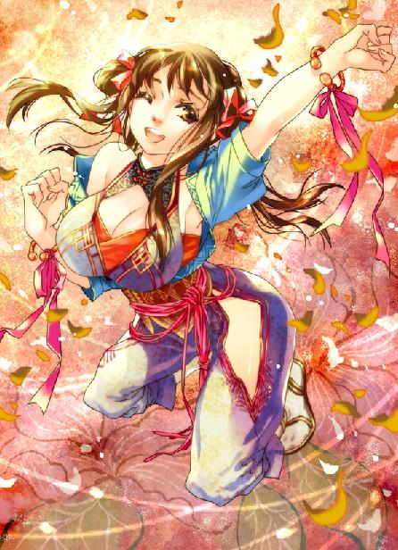

第22集·波斯密信
云水篇（2/4）
出版日期：2011-05-13
【本集内容简介】
护送两名“岳家姑娘”往赴晴州，被星月湖列为程宗扬的首要任务，纵然旧时谢艺所掌的第一营悉数交托于他，被强行拉拢的发展也非他所愿。
船泊扬州，程宗扬与乐明珠适巧相逢，但潘金莲管束极严，纵然遇上仇敌狙杀、坏船，也不愿与程宗扬等人同行。
小紫由月霜口中套出佣兵团的机密任务，竟与波斯商人、拜火教以及黑魔海有关！黑魔海阴谋轮廓渐渐浮现，三者之间有何牵连？晴州之行又会生何变数？
※ ※ ※ ※ ※

封面人物：乐明珠
临安。葛岭。
“砰”的一声，一只白玉碟砸得粉碎。清脆的响声打破阁内的宁静，玉屑在青石板上四处飞溅。
座中男子戴着一顶乌角巾，须发犹如墨染，虽然年逾五十，但狭长的眼中精光闪动，显露出旺盛的精力和勃勃的欲望。此时他面露怒容，旁边一名官员束手不语，噤若寒蝉。
一名男子弯下腰从容捡起玉屑，然后道：“太师息怒。陛下既然手诏请太师亲自出镇，以朝廷惯例须建节，授节度使，并无他意。”
“节度使一职乃粗人之极致！老夫节制诸将如弄小儿，何须此职！”贾师宪厉声道：“应龙！”
旁边那名官员躬身道：“在。”
“替老夫上表，辞去节度使职位！”
翁应龙道：“是。”
廖群玉微微叹息。他放下玉屑，挺身望着座中独掌大权十余年的宋国一品太师，良久说道：“太师不肯领节度使，请朝廷颁赐双旌双节，以明赏罚，如何？”
贾师宪余怒未消，只哼了一声。
一名家仆进来，“老爷，夏将军求见。”
贾师宪露出厌恶的表情，“不见！”
廖群玉道：“夏用和当世勇将，此番用兵正须此辈出力。”
贾师宪道：“一个丘八，不必理会！”
家仆离开后，廖群玉取出一只木匣放在案上。贾师宪脸色稍霁，“印出来了？”
“刚印出几册。”
贾师宪掀开书页，只见纸白如玉，字迹墨光清晰，连声赞道：“好！好！纸宝墨光，赏心悦目。”
廖群玉道：“纸张是上等的玉版纸，油墨用金香麝调制，可千年不变。六朝史事与诸子杂说合编为百卷本，只是价格不菲，印制一套便要近百银铢。”
贾师宪怒气已消，轻抚书卷喟然道：“此中文字，何止千金？先从府中支取两万银铢，印制二百套吧。”
翁应龙已经写好奏章，双手奉上。贾师宪看了一遍，微微颔首。
翁应龙道：“晴州之事该如何处置？”
贾师宪道：“那些商人尽是世之奸蠹，挟其资财，聚敛成性。长此以往，国将不国。”
廖群玉小心收起书册，然后道：“江州之事未了，再引出晴州那些商会，只怕横生枝节。”
贾师宪离开座位，走到窗边，“我已下过手令，正要借此机会，好好敲打那些商蠹。”
他推开窗户，负手远望。葛岭草木依然葱茏，远处西湖波光潋滟，湖侧的临安城沉浸在淡黄的暮色中，一片祥和。
贾师宪低叹道：“当日岳贼肆虐，群臣束手，任其横行无忌，实是朝廷奇耻大辱！老夫费尽心力才除去此贼，怎容他死灰复燃？应龙，建康有回书了吗？”
“仍无音讯。”
贾师宪冷哼一声，“既然如此，也不必等王丞相的回书了。待攻下江州，尽除岳贼余党，城池土地照样还给他们就是。如果有兴趣，尽可让他们的北府兵据江观战，看我的上四军如何摧城拔寨！”
※ ※ ※ ※ ※
云水。鹏翼社，鲲字号楼船。
程宗扬仍坐在椅中。面前桌椅依旧，星月湖八骏之一的云骖已经踪影皆无，就像从未出现过。
卢景带来的消息没有让程宗扬感到太意外。自己早有预感江州将经历一场恶战。双方从山野鏖战到城下，战场从陆地一直延伸到水上，只是不知道对手会是宋军。
对于江州之战，自己并没有太多担心。萧氏父子既然敢接下江州，自然有防御的手段。如果星月湖剩余的两千人都是萧五那种水准，宋军只怕多上十倍也讨不了好。何况还有自己送去的礼物。
早在建康时，石灰坊刚烧出第一批水泥，自己就着手这件事，准备给小狐狸一个惊喜。
自从来到这个世界，程宗扬不只一次后悔自己大学应该选理科，可当初自己没有前瞻性，完全忽略穿越的可能，竟然选了一门对穿越者毫无用处的英文系。对于自己这个缺乏必要准备的穿越者来说，水泥可以算是自己唯一掌握的跨时代技术。
说起来很惨，但确实是实情。别说枪械、大炮，自己那点理工知识连块肥皂都造不出来。
将水泥提供给小狐狸并不是程宗扬一时冲动，即使没有迫在眉睫的江州之战，自己也会与星月湖合作。星月湖有的是身强力壮的汉子，只要自己提供足够的石灰，再加上祁远这个新上任的行家指点，短时间就能让江州城改头换面。
听到宋军准备对江州用兵，程宗扬第一个念头就是放弃晴州之行，立刻赶往江州。但卢瞎子比自己还急，把月霜往自己手里一丢就拍拍屁股走人。
程宗扬算了一下，自己乘船顺水到晴州要二十多天，宋军远道进攻江州，大军集结，走陆路三个月能投入战场都是快的。等送完月霜，自己再去江州，恐怕还能赶在宋军前面，亲眼看到自己“发明”的水泥在江州大派用场。与这件事相比，自己在建康的临江楼只是一件小事。
贾师宪远望西湖的时候，程宗扬也推开窗户，在暮色中临风远眺。夕阳下，浩浩荡荡的云水浮跃出万点金红的光芒，向着没有尽头的天际流去。
这个世界就像水中扭曲的倒影，熟悉而又陌生。直到现在，程宗扬也不敢相信自己真在晋朝的建康生活过，还是这仅仅是个梦。不知道自己真的是与王导、谢安这些历史人物接触过，还是仅仅接触到的是他们虚幻的影子。
这个世界就像一盘被无数次篡改过的棋局，面前那些错综复杂又捉摸不定的棋路，令自己对未来一片茫然。程宗扬甚至不知道自己会是占尽先机的棋手，还是局中随时可能被提走的棋子？毕竟前面已有岳鹏举中盘退出的先例。段强更惨，刚落子就被提走。
自己这枚棋子呢？会不会在下一手就被提掉？
程宗扬很久没想过这个问题了，因为自己不知道答案是什么，也不知道有没有答案。在这样的暮色里，一切都显得那么不真实，连自己的存在感都渐渐变得模糊，仿佛融化在熔金的夕阳间，一点一点消失。
舱门轻轻一响，程宗扬一瞬间从恍惚中抽离出来，眼神变得明亮异常。
舱门推开，外面是一个中年男子。他穿着绸衫，腰间挂着一只俗气的金线荷包，貌不惊人，看起来就像个庸碌的商人。
但关上房门的刹那，他身体突然一挺，双脚“砰”地一并，整个人仿佛一柄淬火的钢刀，从庸碌的外表下跃然而出，抬臂向程宗扬敬了一礼，“程公子！”
在六朝见惯了抱拳拱手的礼节，突然看到有人朝自己行军礼，程宗扬愣了一下才道：“俞老板？”
“俞子元。”那男子道：“星月湖大营一团一营少尉排长。”
程宗扬暗暗称奇。这个俞子元看起来身手不凡，竟然只是个小排长。他微笑道：“俞少尉你好。”
俞子元没有放下手臂，而是认真说道：“多谢公子。”
“我有什么可谢的？”
俞子元眼中忽然涌出一丝泪光，胸口起伏几下才说道：“谢中校是我们一营的营长。”
“谢艺？”
“谢中校在战场上救过我两次命。中校死的时候，我们兄弟却没有一个在他身边。”俞子元压抑着感情，低声道：“公子千里迢迢背回营长的骨骸，是我们一营所有兄弟的恩人。”
想起谢艺，程宗扬心里有些不好过，“谢兄也救过我的命，路上帮了我很多。”
俞子元收起泪光，“卢中校命令我们兄弟护送程公子和两位小姐回晴州。公子有什么事尽管吩咐。”
“船上还有你们的人吗？”
俞子元毫不隐瞒道：“我们排还有二十多名兄弟，在船上的有十四个。这趟生意做完，我也要到江州去。”
程宗扬笑道：“到时候说不定我们又同路了。”
“公子也去江州？”
程宗扬叹了口气，“小狐狸要打仗，我怎么能不去呢？俞兄，这船上有多少客人？”
俞子元道：“船上一共载了四百多名客人。有几个到扬州采购鞭炮的，大部分都是去晴州。”
听到鞭炮，程宗扬心里一动，“扬州有烟花没有？”
“烟花要数晴州出的最好，每年十月，晴州几大商会在江上点放五色烟炮，烟火满江，堪称盛事。”
五色烟炮听起来和自己知道的烟花差不多。到了晴州，买几支和小紫一起到江边放着玩，让她开心开心，总比烧人家房子好吧。
程宗扬笑道：“多谢俞兄。雪隼佣兵团的人住在哪儿？”
“在后舱。一个十几人的大间，还有一个小房间是月姑娘住的。我陪公子一起过去吧。”
“俞兄不用客气。我去看看几个朋友。”
俞子元迟疑了一下，“刚才那位捕头下船离开，是不是有什么急事？”
程宗扬打了个哈哈，“她是六扇门的人，可能有差事要办吧。”
俞子元释然道：“如此最好，岳帅当年与六扇门是对头。有她同行只怕对紫姑娘不利。”
姓岳的到底干了多少缺德事？怎么遍地都是仇家？
俞子元道：“整个顶层都不再安排客人，公子与紫姑娘尽管安心居住。我在甲板一层，公子有事只须吩咐一声。”
俞子元离开后，程宗扬没有立即去找雪隼佣兵团的人。等俞子元走远，他伸了个懒腰，然后真气透入窍阴穴，在魂影上狠狠干了一记。
隔壁相连的小门响了两下。接着一个女子推开门，弯腰深深鞠了个躬，“老爷！”
程宗扬一把拽住这个本已离船的美貌女捕头，把她推到舱壁上，让她背对自己趴好，然后拉起她的捕快服，把裤子往下一扒，接着挺起阳具对着她白生生的屁股干了进去。
阳具挤进蜜穴，传来柔滑而紧密的触感。泉玉姬的斗笠掉在一旁，露出发髻后一支白玉扁笄。女捕快翘起屁股喘息道：“古玛朴思迷达！谢谢老爷！哦泥……老爷干得好深……”
与六扇门的捕头一同到晴州，路上太过招摇，不好隐匿行迹。因此程宗扬要泉玉姬以捕快身份下船离开，做出远行的样子，再悄悄登船。泉玉姬交出魂丹就成为无法背叛的奴隶，顺从的像自己的影子。对这个新罗贱奴，自己没有丝毫好感，拿来泄欲倒是个不错的玩具。
对这贱人自己连前戏都不用做，只要在魂影上撩拨几下，插进去就是湿淋淋的。新罗贱人不愧是黑魔海精心培养的女奴，配合度极高，每次都让自己尽兴而终。有了卓云君的教训，程宗扬收起以往那点怜香惜玉，对这贱奴毫不客气，一边肏着她的艳穴，一边讥嘲道：“湿成这样，真够骚的！”
女捕快娇声道：“奴婢一想起老爷，下面就禁不住湿了。”
黑魔海的妖术果然高明，窍阴穴中的魂影与这贱人魂魄相系，随便撩拨几下就感同身受。程宗扬不禁想到，如果自己能把黑魔海女人的魂丹都搞到手……
“泉贱人，”程宗扬道：“黑魔海的女人是不是都有魂丹？”
“魂丹要教主亲授，”泉玉姬喘息道：“只有教中的御姬奴才有。”
“御姬奴有多少？”
“御姬奴大都是教主亲自挑选，身份隐秘，奴婢不知道其他人的身份。”
“这也不知道，那也不知道，真没用！”
“米呀哈蜜达！”泉玉姬被他干着叫道：“对不起！”
“过来！”程宗扬抱起泉玉姬的腰肢，把她推到窗口。泉玉姬受惊般浑身一紧，接着臀后阳具狠狠干进阴道，将她小屄塞得满满的。
舱房在楼船最高层，窗外是浩浩云水，本来不必担心被人看到，但这时船只还没有离岸，一眼望去便看到码头上熙熙攘攘的人流，只要有人抬头就能发现伏在窗口的女人。
“扶好窗户，腰弯下去，把衣服解开！”
“凑啊哟……”
泉玉姬声音发颤地解开上衣，把捕快服脱到腰间。她击杀自己同僚时眉头都不动一下，就像机器人一样冷酷无情，这时在窗前宽衣解带，手指却禁不住微微战栗，白皙的皮肤透出一抹艳色。
程宗扬一把扯下泉玉姬的面纱。女捕快惊叫一声。
“你戴着面纱，谁都能认出你，还不如摘了！”程宗扬挺动着阳具道：“反正没人见过你，还以为是哪个不要脸的粉头呢！”
“阿拉嗖！古吗朴思蜜达！奴婢知道了，谢谢主人。”
泉玉姬两手扶着窗户，纤软的腰肢弯曲下去，丰美的屁股高高翘起。她松开的长裤掉在踝间，露出光溜溜的腰臀和双腿，上衣敞开，白光光的玉乳低垂，雪球般前后抛动。乳尖的银铃来回摇晃，将乳头坠得拉长。
女捕快下体分泌出大量汁液，整个蜜穴都水汪汪的。阳具在狭紧的蜜肉间进出，带来阵阵快感。程宗扬捏着她的屁股道：“再挺高点！”
“凑啊哟！”
身前的女捕快弓着腰，上身与地面平行，这时踮起脚尖，竭力挺起屁股，那只又圆又翘的大白屁股高耸着，肉感十足。娇艳的性器向后挺起，夹在白嫩的臀肉间，露出花瓣般红嫩的蜜肉，被粗壮的阳具撑得满满的，不住滴着淫液。
程宗扬扒开她的臀肉，一边用力挺动阳具，一边观赏她下体娇嫩的蜜肉被大肉棒肏弄时蠕动滴水的艳态。
泉玉姬元红新破，阳具进出间仍然感到痛楚。两片柔嫩的阴唇不时抽动，雪滑的臀沟内，小巧的菊肛也随着阳具进出而不停收缩。她长年奔走，白生生的臀肉弹性十足，而且富有光泽，就像一堆白玉团，在自己的撞击下不断变形。
程宗扬一手伸到她胸前，抚弄着白光光的乳球，“那不是刚才那个小官吗？泉捕头，跟他打个招呼。”
泉玉姬耳根都红了起来，“米呀哈蜜达，对不起……”
“真没用！”
程宗扬用力干着她的屁股。泉玉姬略带痛楚地叫道：“哦泥……老爷肉棒好大……好硬……插到奴婢花心里了……新罗女人的鲜花被老爷采了两遍……”
淫水混着几缕血丝从赤裸的女捕快蜜穴中涌出，顺着修长的玉腿内侧一直淌到雪白的脚尖，看起来淫艳无比。
程宗扬拽住她的头发用力一挺。泉玉姬两手支撑不住，整个上身都被推出窗外，暴露在众人视野中。
“哦——泥！”
泉玉姬发出一声尖叫，滑嫩的小穴猛地一紧，夹住阳具。她的叫声引起人群注意，几道好奇的目光射来，接着吃惊地张大嘴巴，看着舷窗中露出的白花花肉体。
程宗扬只觉她小穴一阵抽动，接着喷出一股温热的液体，顺着硬梆梆的阳具直淌下来。
程宗扬把她抱起来，“砰”地关上窗户，然后将她压在船板上，干进她高潮的淫穴用力肏弄。
“竟然泄了身子，真是个浪货。”
泉玉姬的表情与其说羞耻，不如说是变态的兴奋。她手脚微微抽动，娇喘连声，“准送哈蜜达……好羞耻……哦，奴婢又被老爷开苞了……”
云收雨散，程宗扬穿好衣服，神清气爽地转过身。
那个新罗贱人赤条条躺在船板上，雪白的双腿大张，腿间娇美的玉户被干得翻开，红嫩的蜜穴灌满浊精，夹杂着星星点点的丹红，就像被自己第二次开了苞。程宗扬笑道：“泉捕头，辛苦了。”
“捆擦那有！”泉玉姬脸上还带着亢奋和羞耻的红晕，吃痛地说道：“没有关系……”
※ ※ ※ ※ ※
程宗扬轻松地走下舷梯。船上已经载满客人，衣履华贵的商人、风尘仆仆的行旅，当然也少不了身强力壮的佣兵。如果不是所有东西都是木制的，这艘楼船简直就像一艘豪华游轮，船上各种设施一应俱全，居然还有一间餐馆。
雪隼佣兵团住在后舱。程宗扬绕到甲板后面，忽然看到几张熟悉的面孔。敖润抱着一只酒坛，闷着头靠在船舷边，老张和冯源在一旁，似乎在劝说什么。
程宗扬犹豫着要不要过去打个招呼，敖润已经看到他，抬起头叫道：“程兄弟！过来坐！”
老张和冯源尴尬地朝程宗扬笑了笑，冯源指了指敖润，用口形示意，老大已经喝多了。
敖润不由分说把程宗扬拉着坐下，倾过酒坛倒了一碗酒，“这一碗是敬程兄弟的！”
程宗扬拿起碗，敖润用力拍着他的肩膀，“什么都不用说了！你小姨已经都告诉我了！输给程兄弟，我老敖没话说！”
“等等！等等！”程宗扬连忙拦住他，“什么我小姨？哪儿钻出来的？”
“就是紫姑娘，说是令堂最小的妹妹——”
“我干！我娘生我的时候还没她呢！”
冯源恍然道：“我就说嘛，你外婆挺那个……啥的……”被程宗扬眼一瞪，连忙咽了回去。
老张道：“那不是你小姨？”
“那是我小婢！”
敖润红着眼叫道：“程兄弟！你这可不行啊！月姑娘已经是你的人了，你再跟别的女人不清不白——”说着他瞪着布满血丝的眼睛就要摸刀。
程宗扬连忙拍着胸脯道：“我小姨！是我小姨！行了吧！敖老大，你就说我那位亲姨奶奶跟你说什么了？”
敖润盘着腿，推心置腹地说道：“程兄弟，你知道我对月副队长有那么一点意思……”
程宗扬老老实实道：“我还真不知道。”
“咱明人不说暗话！刚才你小姨来找月副队长，我才知道她是你没过门的媳妇，因为闹别扭才跑出来。被你小姨这么一说，我这心里……”敖润捂着胸口，眉毛打结似的拧在一起。
冯源在旁赔笑解释道：“借酒浇愁，借酒浇愁。”
死丫头的话你们也信？小紫骗起人来真有一手，敖润也是老江湖了，怎么也被她骗得团团转？这死丫头见人就骗，一点品德都没有！
程宗扬暗骂一声，正容道：“实话跟你说——我这媳妇哪儿都好，就是脾气不大好。这一跑就是好几个月，见面一句好听的都没有，拿剑就刺，什么难听骂什么——你可是亲眼看到的。我是倒了八辈子霉才摊上这么个媳妇。”
敖润怫然道：“你这话我不爱听，月姑娘脾气怎么不好了？”
“好好好！”程宗扬道：“我小姨还说什么了？”
敖润抓住他的手腕低声道：“程兄放心。那天的事，我们哥几个全烂肚子里面，一句也不往外说！”
凭什么啊？死丫头不会将你们洗脑了吧？
冯源在旁边道：“要不是你小姨是六扇门的捕头，这事我还真不信。长安城的事，跟我们雪隼佣兵团一点关系没有，他们闹得天翻地覆，也闹不到我们晴州来。”
老张也道：“这回我们兄弟是吃了亏，但招的那些兄弟还没有正式入团，这口气只能忍了。往后见着六扇门的爷儿们，我们绕着走。”
死丫头不会是把泉玉姬的腰牌改个字，就冒充起六扇门的紫捕头吧？她又撒什么弥天大谎，说长安城闹得天翻地覆呢？
程宗扬坐不住了，“我那位亲姨奶奶这会儿在哪儿？”
敖润黯然神伤，捧着酒碗“咕咚咕咚”猛灌。
冯源道：“她正跟月副队长说话，劝她回去。老大，你别难受，我真听见月副队长答应了。”
敖润捏了把鼻子，“我难受什么啊……”
程宗扬道：“敖兄，咱们有的是时间聊。我先去瞧瞧我姨奶奶。”
冯源体贴地说道：“放心！放心！月副队长自己一间房，你尽管去，绝对没人打扰。”
程宗扬问明位置，急步朝后舱赶去。一路心里忐忑，月霜和小紫这两个同父异母的姐妹见面，究竟会迸出什么火花？不会是火山爆发吧？
※ ※ ※ ※ ※
远处出现两个身影。穿着佣兵服的美女烧成灰自己都认识，除了月霜还能是谁？另一个娇滴滴的小美人儿，自己变成灰也忘不了，当然是亲亲小紫，自己刚刚被认的亲姨奶奶。
程宗扬心里一阵嘀咕。死丫头和月霜真在一起啊？看样子似乎聊得还挺开心。
这对同父异母的姐妹容貌没有多少相似之处。月霜身材高挑，论年纪她大了几岁，身体曲线更加饱满，眉眼清晰如画，宛如一株英气逼人的剑兰。小紫身材窈窕纤美，五官更加精致，这会儿娴淑的样子就像一朵精美的莲花。唯一相同的是两个少女都够美，仿佛两株活色生香的花树在月下比娇争妍。
月霜边走边道：“我好久没见到卓师叔，原来她在六扇门做事。”
小紫小手握在身前，步子迈得碎碎的，一副害死人不偿命的淑女模样，含笑道：“我和卓教御很要好的，她的凤羽剑就放在我这里，还教了我一点太乙真宗的法术呢。”
说着她双掌一分，一条带着光焰的火羽从白嫩的掌心一闪而逝。
“烈焰凤羽！”月霜惊讶地问道：“她连自己的绝技都传给你了？”
小紫可爱地吐了吐舌头，“我只会个样子啦。”
程宗扬心里冷笑。卓云君落在小紫手里那么久，什么秘密都能被拷问出来，一招烈焰凤羽算什么。
月霜终于完全相信面前的少女，“你年纪这么小，这也很了不得呢。”她停下脚步，“可是……泉捕头为什么要杀郑捕头呢？”
小紫一脸认真地说：“得到切实证据之前，我们无法定案。”小紫压低声音道：“但据我们推测，应该与太子的势力有关。郑捕头一直都是太子的人。”
看着死丫头煞有介事的样子，自己也差点相信她说的才是真相。六扇门卷入长安诸王争位的乱局中，导致内讧，与黑魔海没有什么关系。连唯一亲历过瓠山之变的敖润都被她说服了，何况是月霜？
月霜似乎想到了什么，脸色微微发红，过了会儿才道：“但泉捕头亲口承认她是黑魔海的人……”月霜啐了一口，“好下贱。”
程宗扬躲在一处船舷的阴影里，听着小紫笑道：“我那个外甥虽然热心，为人却有点糊涂呢。”
月霜冷起脸，咬牙道：“那个混账！”
小紫眼睛眨了眨，仿佛从她口气中听出些什么，但没有追问，告诫道：“泉捕头和郑捕头的事涉及机密，你们千万不要对外面说。”
月霜点点头，“我知道了。”
“还有件事要请姐姐帮忙。”小紫笑吟吟道：“到了晴州，如果可以的话，我们六扇门希望你能出面，看能不能引出黑魔海的坏人。”
程宗扬心头猛跳了一下。让月霜当诱饵引黑魔海的人出来？死丫头这是想借刀杀人吧？
月霜却毫不迟疑地点头，“这是我应该做的！”
小紫一副体贴的口气道：“月霜姐姐，这件事很危险的，你再考虑一下，毕竟黑魔海很坏的。万一被他们发现，你会面对很多可怕的敌人。虽然我们能救下成千上万的善良民众，但姐姐的生命同样十分宝贵啊！任何可能对你造成伤害的事，我们都很担心。”
月霜断然道：“这也怕、那也怕，还能做什么？不用考虑了，我答应你们。”
小紫俏美的面孔流露出一丝恰到好处的感动，挽着月霜的手真诚地说道：“月姐姐，六扇门和天下的正义之士都会感谢你！”
开什么玩笑！程宗扬恨不得捂住她的嘴巴把她拖回来，狠狠揍她一顿屁股，可月霜脸颊却微微发红——一副发正义春的模样。程宗扬心里摇头，被人卖了还替人数钱，月霜这笨丫头也太好骗了。
小紫仿佛无意地说道：“我那个外甥是个商人，平常在外面做生意。”
“怪不得是个下流的小市侩！他和姓泉的……哼！”月霜停下来，羞恼地哼了一声。
小紫笑嘻嘻道：“那个小家伙挺坏的。不过姓泉的也不是什么好人。”
死丫头扯这个是什么意思？程宗扬心里嘀咕着，只听小紫笑道：“泉捕头是新罗人，不在乎什么礼义廉耻。她们新罗女人穿的衣服，还故意……”
小紫悄悄在月霜耳边说了几句，月霜惊讶地皱起眉头，“真的吗？都是露上体的装束？”
“是啊。”小紫吐了吐舌头，“她们有好多官妓，官妓生下的孩子都被叫成棒子。还有人编到书里，叫《辽左见闻录》。”
月霜又是惊讶又是好笑。两人说了一会儿，月霜突然想起一件事，“对了，有件事要告诉你们六扇门。”
“什么事？”
月霜拉住小紫，“我们到舱房里说。”
※ ※ ※ ※ ※
本来想知道她们姐妹两个聊什么，这会儿也不用看了，月霜已经对小紫信了个十足。论起性格，月霜与云丹琉有些相似，无论说话办事都直接了当，而且脾气火爆。但月霜自小在军营长大，比云丫头要单纯得多。如果是云丹琉，小紫那番话根本骗不住她，说不定还趁机黑吃黑把泉玉姬干掉，消除一个隐患。
说到底月霜脸皮还是比较薄，如果在大草原被自己上的是云丹琉，云丫头吃那么大亏，这会儿同乘一船，自己早就被她替天行道了。而月霜当着满船人的面，怎么也不肯说出草原上吃亏的实情。
脚下的甲板微微晃动，楼船升起扇形的硬帆在夜色中启航，沿着浩瀚的云水顺流而下，朝数千里外的晴州港驶去。
小紫施施然进来，漂亮的大眼睛一眨一眨，露出天真的笑容。
程宗扬两手抱在脑后，躺在床上道：“看你笑得那么开心，活像一只小狐狸刚偷吃了人家的母鸡。老实说，你找月霜说什么了？”
“当然是认姐妹，然后抱头痛哭一场啰。”
“得了吧，你把敖润他们都骗得服服贴贴，月霜那傻丫头还不是随便让你骗着玩啊？老实说，不然打你屁股！”
小紫白了他一眼，“你不是都听到了吗？”
程宗扬理直气壮地叫道：“我又没听全！”
小紫忽然一笑，“程头儿，有件好玩的事，你想听吗？”
程宗扬怀疑地说：“恐怕不是什么好事吧？”
“猜对了！”小紫笑道：“雪隼佣兵团的人送货到广阳，还接了一件任务，从广阳带了一件东西回晴州。你猜委托他们的客户是谁？”
“这你都套出来了？”程宗扬坐起身，“佣兵团不是要替客户保密吗？”
小紫叉住腰，“别忘了，我是六扇门的捕头，要查疑犯的资料，他们当然要配合。”
“喂，你是怎么冒充捕头的？不会拿个假腰牌，他们就信了吧？”
小紫得意洋洋地说：“我的捕头身份可是经过认定的。”
程宗扬一头雾水，“谁认定的？”
“笨死你了，当然是这里的地方官喽。”
“那个小官？”程宗扬明白过来。这丫头用泉玉姬的身份得到丹阳官吏的信任，再用丹阳那个小官得到敖润等人的信任。敖润他们不信泉玉姬，丹阳的地方官却不能不信。死丫头再做点手脚，轻而易举弄几份文件出来，要骗倒敖润也不是难事。
程宗扬气哼哼道：“你就骗吧，小心掉进拔舌地狱爬不出来。”
小紫忽然抱住他，轻声道：“如果我真进了地狱呢？”
抱着小紫纤软的腰肢，程宗扬心头一阵激荡，过了会儿在她耳边道：“那我只好跟阎罗王拼命了。”
小紫抬起脸惊喜地问：“你会帮我杀掉阅罗王吗？”
“会！”程宗扬大声说：“不管谁欺负你，我都要把他碎尸万段！”
“太好了！”小紫举起白嫩的小手高兴地说：“到时候你当阎罗王，我要当地狱女王！”
“你要当地狱女王，全天下的人都该一心行善，免得落到你手里。”
程宗扬说着，忍不住低头想吻她的小嘴。小紫咯咯一笑，游鱼般从他臂间滑出，让自己亲了个空。程宗扬懊恼地说道：“废什么话呢！赶紧说！那客户是什么人？”
“一个波斯人。他委托雪隼佣兵团送一件东西，交给晴州的波斯商会。”
“佣兵团接的奇怪东西多了吧，月丫头为什么对这件东西上心？”
“他们刚接到东西不到一个时辰，那个送信的波斯商人就被杀了。”小紫笑嘻嘻道：“死得很惨呢。”
程宗扬生出一丝好奇，“到底什么东西？”
小紫拿出一张纸在他面前晃了晃。
程宗扬接过来，上面写着几行古怪的符号，字迹倾斜，看起来有点像字母，但都是一半一半的。
“这是什么鬼画符？”
“人家看了好久也没想出来。”小紫眨了眨眼，“程头儿，你要能看懂，人家就让你亲一口。”
你都看不出来，故意拿出来是想让我难堪吧？程宗扬横竖看了几遍，忽然几个残缺的字母吸引了他的目光。那些字母有些像只写了一半的罗马数字，一行是上半边，一行是下半边。
程宗扬心里一动，把纸张折起来，几个残缺的字母拼在一起，显出几个完整的罗马数字：ⅢⅠⅣⅠ。
“我明白了！”程宗扬拍案叫道：“这本来是一些纸条！被人誊写到一张纸上才变成几行。”
程宗扬把纸张沿着倾斜的字迹裁开，连成一长条，再卷成筒状。错落的字母旋转着一行行拼接起来，变得清晰可辨。
小紫疑惑地看着程宗扬，“你怎么想出来的？”
终于能压过死丫头一次，程宗扬得意地说道：“过来！先让我亲一口！”
小紫眨了眨眼睛，“你先说，说完就让你亲哦。”
“泰西有个大国，他们的军队发布密令时，用羊皮包在一根圆木棍上，写完后把文字螺旋状切开。送密令的人只拿到一堆零散的字符，得到密令的一方用一根直径相同的木棍，把羊皮缠在上面，就可以复原文字。”
这是亚历山大的发明，幸亏自己还记得。程宗扬道：“是拉丁语。罗马人的文字。”
小紫好奇地说：“你认得吗？”
程宗扬摇了摇头。自己只能勉强认出一些字根，整篇就不知道什么意思了，只有几个罗马数字确定不会认错。三一四一……是时间还是数量？
“晴州还有波斯人商会？”程宗扬琢磨着放下纸条，“波斯人的事跟咱们没什么关系吧？”
“拜火教呢？”
程宗扬抬起头。
小紫笑吟吟道：“月霜觉得委托人好像和拜火教有关，你们在大草原上遇到过，她对这事很在意呢。”
程宗扬心里升起不祥的预感，小心道：“那丫头什么都跟你说了？”
小紫挺起胸脯，“你的事我全部都知道！还知道你跟她上过床！你这个无耻的淫贼！”
“我干！你肯定用什么妖法了吧！我才不信月霜会告诉你这些！”
小紫抱住手臂冷笑一声，“程头儿，你真没用，一骗就骗出来了。”
又被骗了！程宗扬心里惨叫。小紫已经用力踢了他一脚，“好啊，你敢和她上床！”
“误会啊！我们之间完全是误会！”程宗扬抱着腿叫道：“你要觉得吃亏，我也陪你上床好了！”
“讨厌！”
“喂，别跑啊！刚才你答应过让我亲一口的！哎哟……”
※ ※ ※ ※ ※
在船上相处几天，程宗扬和雪隼佣兵团的汉子已经混熟了。开始大家还对这个六扇门的年轻捕快有点戒心，程宗扬赶紧解释，只有自己小姨是六扇门的人，他本人是做生意的，跟六扇门没什么关系。
冯源沉吟道：“我说副队长在六扇门好端端的，怎么非要跑到晴州当佣兵，原来还有这些不为人知的内情啊。”
老张道：“副队长和你的事，是你小姨牵的线吧？我看她们两个很要好啊，这两天整日待在一块儿。”
一个新加入的佣兵汉子道：“哎哟！你不会就是和小侯爷光屁股在船上跳舞那个吧？可不是！整个建康城都知道了！真的不是啊？我说呢，你看着也没那么不要脸嘛。喂，六扇门内斗的事究竟是真的假的……”
敖润道：“六扇门！六扇门！你们少说点不行吗？喝酒！喝酒！”
敖润“咣咣”喝了两碗，喘着气道：“老程啊，你那天一脚把我踢晕，后面的事我没看到，但泉捕头……那功夫可真邪门！”
程宗扬道：“郑捕头的拘魂锁也很邪门嘛。幸好我姨奶奶来得及时，要不我小命就没了。这件事六扇门自己去办，咱们就别管了。来！喝酒喝酒！”
靠着小紫骗死人不偿命的谎话，终于把瓠山发生的事支吾过去。接下来谈起生意，大家分外相得。
敖润口沫横飞地说：“我们雪隼佣兵团可是晴州一等一的大团！宗旨就是公平、正义、勇气和责任！老程你若有货，就交给我们雪隼佣兵团！别管是不是远在天边，都保证给你顺顺利利送到！你瞧我这些兄弟。老张！八极门的高手，一身横练功夫，早就是第四级入微的境界！放哪儿都响当当的！副队长就不用说了，正经的巾帼不让须眉！冯大法，平山宗的大法师！一手火法出神入化！你去打听打听，像我们雪隼团这样每队配一名法师的，有几个佣兵团能做到？不说远的，建康城赫赫有名的云家，在晴州的货物也是我们押运！”
“你们和云家也挺熟？”
“那当然！云家在晴州有好几间商号，都是云六爷亲手打理。他跟我们团长薛延山、副团长石之隼都是过命的交情！不瞒你说，老敖这次到建康，就是从云家得的信儿。”
程宗扬笑道：“越说越近了。云家和我也不是外人，这顿我请客！”
“哪儿能让你破费！”敖润把口袋拍得山响，“我们雪隼团有的是钱！”
程宗扬也不推辞，“正好我有事要和云家联络，沿途有没有云家的商号？”
“前面就是扬州，船要在码头泊一日。喂，老张！”敖润扭头道：“云家在扬州的商号叫什么来着？”
“就是云氏商会在扬州的支号，掌柜也是云家的人。”
敖润道：“坐船坐得难受，正好上岸散散心。到了扬州，我陪你去！”
说话间旁边传来一阵轰笑，敖润扭头道：“冯大法！又干嘛呢？”
冯源盘膝坐在甲板上，在他身前数丈距离放着三盏油灯。这位平山宗的大法师左手平放，掌心向天，右手食指、中指竖起，放在左掌上，垂眼默念片刻，然后大喝一声：“疾！”
冯源戟指往前一挥，三盏油灯有两盏同时跳出火光。另外一盏被劲气刮倒，灯油洒了一地。
冯源收回手，得意洋洋地说道：“怎么样！”
几名佣兵汉子纷纷道：“不错不错！有点道行！”
“这戏法变得好！”老张怪声怪气道：“冯大法，可你这戏法有什么用？”
冯源哂然道：“用处大了！别看你一身横练功夫，我隔空往你胸口一指，就能在你胸前烧个洞出来。”
“得了吧！谁打仗时怀里揣个油灯让你点呢？”老张道：“就算你法力涨十倍，能挥出个火球来，起码得两个呼吸时间吧？我一步跨过去，先这么一刀，再这么一刀！你还没施完法就把你大卸八块，扔水里喂鱼了！”
冯源叫道：“死老张！看我冯大法师的猛火诀！”说着用力一点。
“啊！”老张惨叫一声，捂着胸口一蹦三尺高，然后“砰”地倒在甲板上。
冯源吓得跳起来，“老张！你没事吧？”
老张一个鲤鱼打挺跃起身，怪笑道：“冯大法，你的手艺还差点儿啊！”
“呸！我点！再点！”
冯源正点得高兴，旁边忽然有人叫道：“哎哟！火！”
甲板上的灯油不知什么时候着了起来，一群汉子连忙捡起东西扑打。敖润也吓了一跳，“胡搞什么呢！船上也敢玩火法！冯大法，烧了船你赔啊！”
冯源连忙道：“不玩了！不玩了！”
众人手忙脚乱扑灭火势，幸好灯油不多，没有酿出事来。
程宗扬蓦然想起一件事，扭头却不见了敖润。他叫住冯源，“敖老大呢？”
冯源挤眉弄眼地笑了两声，“副队长刚才把老大叫走了，没往这边来。”
船上这些天，月霜一直没有理睬自己，落在这些汉子眼中又是一桩笑谈。不管怎么说，比起一见面月霜就想要自己的命，现在的状况已经好了很多。
程宗扬道：“冯大法，你们练火法的，用过火药没有？”
“火药？”冯源皱起眉头。
老张插口道：“你说火器？那东西宋军使过，叫突火枪，弄根竹筒，里面塞上药、装上火捻，一点火喷出去。好像是个姓武的……”
冯源道：“武穆王！人家姓岳！”
“对对！”老张拍了拍脑袋，“那玩意儿不好使，打不着人，不小心倒把自己给伤了。后来换成铸铁的更麻烦。火药塞少了只能打几步远，一股烟就没了。塞多了，铁筒一炸，手都保不住。不多不少吧，又打毬不准！”
老张一番话说得程宗扬大笑起来。多了炸膛、少了没劲，不多不少又没有准头。看来岳帅的火器也和做玻璃一样，费了不少工夫也没做成功。
枪械的制作和丝袜不一样，六朝的丝织工艺除了没有工业化，其他方面既有长时间的技术积累，也有熟练的技术工人，只要提供合适的原料和设计，要做出丝袜并不难。
但枪械制作在这个时代最困难的不是发明子弹，或者提供枪械制作的原理和设计思路，而是制作的精度。这牵涉到采矿、冶炼、模具、技术工匠、工艺流程等一整套内容，每一件都需要几十年甚至上百年的不断试验和技术积累。即使以岳鹏举的雄厚资金和实力，也不可能在十几年内完成几百项创新。
自己对枪械的了解不会比岳鹏举更多，岳鹏举已经尝试失败，自己可以打消短时间内造出枪械的念头了。如果退一步，做一个简单的爆炸物呢？
沉吟间，老张道：“还想？火药那玩意儿贵得很，打出去的可都是白花花的银铢！谁有钱往那儿糟蹋啊！”
程宗扬道：“火药得多少钱？”
“一斤总得好几个银铢吧。”老张道：“听说一杆突火枪花的钱足够养五个好射手了，要不宋军自己也不怎么用呢？”
火药不像箭矢可以回收利用，大规模作战之外，单是平常的训练费就要消耗一大笔钱，射程和威力又有限。虽然自己知道火药的巨大潜力，但对于这个时代的人来说，弓弩无疑是一种更明智的选择。
※ ※ ※ ※ ※
船后的货舱内，敖润气得脸色煞白，指着月霜道：“你怎么能把客户的东西给别人啊！”
月霜道：“我怀疑里面有阴谋，交给六扇门有什么不对？”
“那也不成！”敖润叫道：“咱们是讲信誉的大团！拿了客户的东西，就该安安稳稳送到地方！你这不是砸我们雪隼的招牌嘛！”
“明知道为虎作伥你也要做？”
“怎么为虎作伥了？人家送的就是封信！”
“送封信就会被杀？”
“你小点声！”敖润连忙喝了一声，不放心地看看周围，压低声音道：“我跟你说过，墙上的标记是刺客团留下的。那几个刺客团不好惹，万一被他们知道咱们带着东西就麻烦了。实话跟你说，这一路上我都捏着汗呢。”
月霜赌气道：“反正我把信给了六扇门了，你自己去要吧。”
“姑奶奶，你下次可别这样了。”敖润道：“紫姑娘虽然人好，可太年轻了不是？得，我去跟人家说清楚吧，让人家留点神。这个冯大法也是！我交待要他收好，万一出事就立刻用火法把信烧了，结果还给了你！”
“我是副队长，他当然要听我的！”
“好好好！听你的没错，行了吧？”
敖润哄得月霜不再生气，才唉声叹气地离开货舱。
※ ※ ※ ※ ※
越往下游，河流越发宽广，两岸起伏的山峦逐渐被平原代替，茂密的森林也让位于大片大片开垦过的田地。宽阔的河面浩浩荡荡地在大地上流淌，往来的楼船巨舰散布在江面上，犹如密集的蚁群。
自己还是第一次见到这么多泛江巨舸纵横往来，六朝的繁华和巨大的规模都远远超乎自己的想象。这些天程宗扬没事就跟俞子元、雪隼佣兵团的人闲聊，先学会的就是透过旗帜颜色分辨船只。
秦国尚水德，以黑为正色，打着黑色旗帜的是秦国船只；晋国尚金德，船只大都打着白色旗帜；使用黄色旗帜的多半是以土德自居的唐国船只；汉国自称炎汉，尚火德，旗帜使用红色；偶尔有几艘旗帜上绘着星鸟的图腾，则是来自昭南的商船。
所有船只中，超过半数都飘扬着宋国青旗。这并不是因为宋国在五德中尚木德，或者宋国商会的实力强大。实际上，宋国自认为尚火德，但对五德之说并不在意，选择青色是因为这些船只中有六成来自晴州的商会。晴州人最推崇雨过天青的青色，象征好天气和好运道。
程宗扬对晴州的兴趣越来越浓厚。如果说六朝还有历史的影子，晴州完全是个异数。为何会在六朝的夹缝中，出现一个被商贾控制的商业大港？
俞子元的回答是：晴州位于东海之滨，是云水唯一的出海口，无论哪一方都不愿意见到晴州被一国独占，所以晴州的商会才能在六朝之间左右逢源。
冯源很认真地告诉他：晴州是天下气运所系，无论道门的六大宗派，释门的十方丛林，还是诸子各大学院，都在晴州设有教门支派。这么多神明、贤士汇集一处，当然受到上天庇佑。
敖润的回答很干脆：钱！晴州的大商会有的是钱。不管什么事，只要有钱，一律摆平！
当然还有另一种说法：晴州人崇尚自由，充满冒险精神，无论谁来统治，都不可能束缚住晴州人飞扬的船帆。
楼船进入夜航，满天星斗下，船身犹如一头巨鲸破浪而行。舱下的小阁内，摆了张紫漆茶床，上面放着两只茶盏。茶盏呈斗笠状，青色的釉面布满冰丝般的裂纹，更显得莹润剔透。
俞子元泡了杯茶，“程公子，请。”
程宗扬拿起茶盏，笑道：“难得你泡的是茶叶。”
俞子元道：“六朝饮茶最是雅事。长安盛行龙团凤饼，临安城卖得最好的是顾渚紫笋和龙团胜雪。茶农将茶叶制成茶饼，每次饮茶要先用微火把茶饼炙干，然后碾成粉末，再用绢制的细罗筛过，接着烧水、洗盏，最后还要点茶。烧水的炭要讲究无烟无味，茶饼要先称过，一块不能超过半两，碾茶要用碧玉碾，筛茶的绢只能用一次。最细致的要算点茶，用哪种手法点出来的茶有什么花色……”
程宗扬听得笑了起来，“我在建康见过有人这么喝茶，比吃饭都麻烦。”
俞子元笑道：“岳帅不耐烦那些繁杂琐碎，喝茶只用茶叶冲泡。我们这些人跟随岳帅，也习惯了冲茶。”他摇了摇头，“因为这个，岳帅一直被临安官场视为粗鲁无文的军头，却不知岳帅生性俭朴，比起那些不知世间疾苦的高门贵胄，不啻于天壤之别。”
程宗扬一口茶几乎喷了出来。岳鹏举喜欢泡茶喝跟俭朴没什么关系，纯粹是习惯。不过追随者有意无意将领袖神化，也属于正常——追随者对自己信奉的人破口大骂才是异事。
程宗扬放下茶盏，“你们这些年都在做什么生意？”
“主要是船行、车马行的生意，还有些兄弟在外面自己做事。”
“你们的人那么能打，怎么不建个佣兵团呢？我听敖润说，佣兵团的利润也很丰厚啊。”
俞子元道：“我们若建佣兵团，只怕不出一个月，就被六朝联军剿灭了。”
在这个世界待了这么久，程宗扬也学会了和六朝人一样蓄发，但始终不习惯留胡须，这会儿摸着下巴道：“你们岳帅结的仇家也太多了吧？”
“木秀于林，风必摧之，何况岳帅。”
俞子元虽然说得平淡，程宗扬心里却有些犯嘀咕。岳鹏举执掌宋国权柄，结仇太多还可以理解，但没道理除了他的追随者，一个朋友都没有吧？难道岳鸟人真这么极品？领着一班小弟逢人就踩？
俞子元道：“孟团长一直负责组建星月湖大营，很少在外面走动，才由他出面成立鹏翼社。二团的侯中校当年是岳帅麾下猛将，露面太多，如今化名在秦国做客将。其他几位长官也都换了身份，免得被人识破。”
程宗扬笑道：“我听说还有卖画、教书的？”
“卖画的是崔中校，教书的是王中校。王中校在八位校官中位列第七，号朱骅，与我们谢中校交情最好。”
谢艺临终前曾说要自己带着小紫去找王韬，或者孟非卿和萧遥逸。八骏中的老大铁骊孟非卿、老三龙骥谢艺、老四幻驹斯明信、老五云骖卢景、老八玄骐萧遥逸自己已经见过。未曾谋面的还有老二天驷侯玄、老六青骓崔茂和老七朱骅王韬了。
记得小狐狸说过，王韬出身太原王家，与谢艺交好也不稀奇。不过这样算起来，八骏中有三个都是建康的世家子弟，再加上玄武湖中的别墅……姓岳的似乎和建康关系很深啊。
窗外传来几声呼喊，船上的水手正在与驶过船只相互应答。程宗扬有些好奇地说道：“我看云水的船只好像都是十几条一起走，难道都是船队吗？”
俞子元道：“云水流经地域广袤，许多地方都不太平，船只结伴而行，彼此也好照应。”
“六朝内陆也不太平？有土匪吗？”
俞子元解释道：“六朝各据一方，边境不是大山就是大泽，人口稀少。山林水泽间颇多怪兽，还有许多奇特异族，往往袭扰过往的船只。尤其是过了扬州的一段水路，两岸山高浪急，最容易出事。”
程宗扬想起了南荒那些异族。自己看到云苍峰所藏的地图时，还以为六朝连在一起，占据了地图上最肥沃的土地，看来并非如此。六朝更像是六个以都城为辐射的地方政权，彼此间除了几条道路连接以外，仍留有大片大片的空白地带。
“既然大家都结队而行，为什么鲲字号只一条船呢？”
俞子元笑着添上茶，“不瞒公子说，两个月前，我们鹏翼社的船行开始从晴州贩运物品，经广阳送往江州，当然不好与其他船只结伴。”
“贩运什么物品？”
“武器、粮食。”
程宗扬明白过来。两个月前——那还是孟非卿第一次到建康的时候。看来星月湖早已安排周全，就等找个理由动手了。
十几年才等到这个机会，也难怪他们着急。
※ ※ ※ ※ ※
回到舱房，小紫正在翻看一支光秃秃的剑柄。
“死丫头，你又翻我背包！”程宗扬过来瞧了一眼，“这是我从那个鸟上忍身上捡的，好像有点古怪。喂，你拿它干嘛？”
“姓敖的傻瓜说，有刺客团的人在追那封信，如果被他们抓到说不定会杀死我呢。”小紫眨了眨眼睛，楚楚可怜地说：“那柄匕首在你身上，人家只好拿它来防身了。”
“装什么可怜啊。谁敢刺杀你，上辈子肯定没干好事。”程宗扬在小紫脸上捏了一把，“琢磨出来了吗？”
“只剩一个剑柄，一点用都没有。”小紫打了个呵欠，“还要多久才能到晴州啊？”
“我问过敖老大，明天到扬州，再有几天到夜影关，就是晴州了。不过要到晴州港，还要两天的水路。”
小紫道：“如果到晴州刺客还不来，我就把信贴在晴州的城门上。”
“你很闲吧？没事还想找事。”
“真无聊。”小紫把剑柄一丢，懒洋洋道：“泉奴！”
“凑啊哟！”泉玉姬的声音从隔壁传来。
接着小门轻轻一响，伸出一只纤美的玉足。程宗扬不由自主地瞪大眼睛，那只脚像细瓷一样光滑柔润，没有任何斑点和瑕庇，堪称完美。自己当然认得这是谁的脚。这只脚就和它的主人一样，如同精心修饰过的玉像，每一处都细致雕琢过，却完美得缺乏生气。
这些天在船上没有什么事可做，除了和雪隼佣兵团的人聊聊天，剩下的就是在舱房里搞搞娱乐。这只美脚连同它的主人，这些天自己都没少搞。虽然漂亮，但搞过了也没有什么稀奇。真正让自己惊讶的是她脚下的鞋子。
那双鞋子是用白色的柳木雕刻而成，外面贴着银色的装饰，前端尖窄，鞋弓弧状弯曲，鞋跟细细的，高约三寸。抛开材料质地只看外观，和自己以前常见的高跟鞋没有什么区别，甚至更精致。
那只纤美的脚掌踩在高跟鞋上，雪白的美腿从门框中露出一截，半遮半掩间显得加倍动人。
小紫笑吟吟道：“出来吧。”
一片光泽闪动，一个亮丽的身影从门内走出。泉玉姬惯用的玉笄被摘掉，戴着一顶夸张的羽毛冠。染成粉红色的雉尾长长挑起，随着她的步伐微微晃动。她鼻侧的银环穿着三股细链，绕过玉颊坠在耳下，扇状垂在颊前。白花花的肉体大半暴露在外，双乳高高挺起，乳尖贴着金色的饰物遮住乳晕。乳头从金饰圆孔中伸出，悬着两只乳铃一晃一晃。
她下身系了一根钓鱼细丝，上面挂着一幅淡青色的薄纱。薄纱是她以前用的面纱，此时裁开一半垂在腹下，随着步伐来回摇曳。不仅两条白光光的大腿完全裸露，连大腿根部的腹股沟都暴露出来。
那双高跟鞋没有鞋沿，泉玉姬白嫩的玉足踩在鞋上，足跟抬起，身体自然而然地挺胸、收腹，臀部后翘，将女性肉体的特征展现得淋漓尽致。
程宗扬道：“这是怎么回事？”
小紫笑道：“不是你上次说的吗？马戏团的驯兽女郎！”
前两天自己一时好玩，给小紫讲起以前看过的马戏团表演，没想到这丫头竟然做了出来，而且仅靠自己的只言片语，就仿得似模似样。
泉玉姬的羽毛头冠、半裸的胴体、尖细的高跟鞋，活脱脱就是马戏团那些着装暴露、身材曼妙的性感美女。只不过她衣着更为暴露，那具美丽的肉体在自己的滋润下迅速成熟，被灯光一映，白花花的妖艳无比。
来自新罗的异装丽人踩着高跟鞋扭腰走来，用生硬的口气娇声道：“老爷，主人。”
小紫打了个手势。泉玉姬先是一个平分的一字马，上身挺直，两条白光光的美腿笔直分开，一字形贴着船板，展现出肢体优良的柔韧性，接着上身侧过来，朝后弯曲。她腰肢柔软之极，像纤柳般弯成弓形，两手攀住后方脚上高跟鞋的尖细鞋跟。
小紫笑吟吟道：“泉奴，你是新罗人，还是高句丽人？”
泉玉姬面孔朝天，娇声道：“奴婢是新罗人，与可憎的高句丽人是世仇。是我们文武大王指挥唐军，消灭了百济和高句丽。”
她腰肢弯成弓形，丰满的乳房耸翘着，乳头硬硬翘起，银制的铃铛在乳头上微微摇晃。淡青色的面纱用细丝悬着，被白玉般的玉股压在腹下。那顶粉红的羽冠扇状铺开，撒在曲线柔美的玉腿上，就像一只漂亮的白孔雀。
小紫笑盈盈道：“程头儿，想不想看她漂亮的花？”
“搞都搞过了，有什么好看的？”程宗扬有些吃醋地说：“这贱人被你训得真听话。不知道的还以为是你的马子呢。”
小紫笑道：“老爷不高兴了。泉奴，好好演，让老爷开心一下。”
“凑啊哟。”泉玉姬双乳像雪球一样抖动起来，乳铃轻摇，发出柔靡的铃声。
小紫翘起手指朝她摇了摇，泉玉姬顺从地抬起玉颈，被她在耳侧点了几下，封住听觉。
“真乖。”小紫拍了拍她的脸颊，唇角含笑地说道：“她在撒谎。渊氏是高句丽的姓氏，因为避讳才改姓泉。高句丽几十年前就没有啦，现在是唐国的熊津都督府。高句丽人有些被迁到长安，还有一些被新罗人抓走当奴隶。她在新罗出生，因为不知道爹爹是谁才随了母亲的姓氏。”
程宗扬笑道：“她没有撒谎，只不过是乱认祖宗。”
泉玉姬听觉被封，无论他们说什么都听不到，这时按小紫的吩咐，像条美女蛇一样在船板上扭动肢体，一边拨开悬在腹下的面纱，露出春光旖旎的下体，白嫩的玉指在秘处不住揉弄。
程宗扬忍不住张开手抓住她一只雪乳，挑动她乳头的银铃。这贱人真是天生的奴婢，看得自己心头火起。泉玉姬挺起双乳，玉颊微微发红，眼睛水汪汪得充满媚意。
小紫笑盈盈道：“看出来了吗？她不只魂丹，脑子也被人动过手脚呢。”
“什么？”
“你不觉得她很古怪吗？年纪轻轻就当上六扇门捕头，办案又很精明，为什么连语言都说不好呢？”
程宗扬捏住泉玉姬雪乳的手掌顿时一停，脑中仿佛有道光芒闪过。泉玉姬幼年迁居长安，不要说她的智商，就是一个普通人也不至于十年还说不好一门语言。以前自己没有在意，这会儿被小紫点醒，再想到她在别人和自己面前判若两人的姿态……
小紫道：“我问过她。这十几年里她只在做三件事：修行、查案，还有修饰自己的身体。”
“我明白了！”
眼前的迷雾揭开，变得豁然开朗。按照殇侯的说法，以泉玉姬的年纪能有四级修为就已经很刻苦了。除非她比别人更用心，甚至把学习语言的时间都用来修行。
另一方面，在河边时，泉玉姬查看小紫足迹的神情自己还记得，那种全神贯注的姿态隐约在哪里见过。这时想起来，和鬼王峒那个工匠雕刻时的专注竟有几分相似。
还有，四处奔波查案是件辛苦差事，可她的身子却显得十分鲜嫩，秀足和握剑的手掌都和未出阁的少女一样细白。除了修为对气血的调理补益之外，还要长时间不间断地修饰，才能保持白嫩的皮肤。但她在此之前并没有流露出对男人的注意，每天修饰身体是为谁做的？
二十岁年纪就跻身六扇门捕头，天资聪慧，修为不凡，却缺乏语言天份；与人交流时态度冷硬，对主人却毫不困难地露出媚态；对男人不假辞色，却对羞耻的性事有着出人意料的兴奋感……
很难想象，一个人能在长达十几年的时间里，全心全意只做着三件事——把别人喝茶休息的时间都用在修行、学习办案技能和美容上。但只有这样，才能解释得清这个能力出众又不失美态的六扇门女捕头。
而这一切，都源于某个人在她脑中留下的烙印。
程宗扬感到自己仿佛接触到了黑魔海最核心、也最黑暗的那团迷雾。
眼前的黑魔海御姬奴尽情展露着美艳的肉体，摆出撩人的淫姿。想到她其实是一具被人精心制作的玩偶，程宗扬心里生出一丝古怪的怜悯。
“不知道把她脑中的禁制解除掉，会变成什么样？”
小紫眼睛闪闪发亮，“想试试吗？”
“不想！”
这种节外生枝的事百害而无一利，鬼才去做。真气在窍阴穴中微微一动，眼前的御姬奴立刻爬过来，张开红艳的唇瓣在主人胯间殷勤舔舐。
程宗扬把她推到船板上，从她臀后进入。那个外族的御姬奴一边翘起屁股被主人干着小穴，一边叫道：“老爷！啊杂！啊杂！请用力！”
程宗扬在她狭紧的蜜穴中挺动着说道：“新罗婊子这样就挺好嘛。又骚又听话，也不用担心她会造反。”
“程头儿，你好坏哦。”
程宗扬理直气壮地说道：“干坏事的是黑魔海好不好？她若不是遇到我这么好的主人，说不定要倒什么霉！比如说你吧，可能早就把她切成几块，搞你的恶魔游戏了……”
“啊呀！”小紫惊叫一声。
程宗扬话音未落，张臂一把抱住小紫，坏笑道：“死丫头，看你还往哪儿跑！”说着把她压在身下，毫不客气地吻住她的小嘴。
小紫香软的唇瓣让自己又想起那个惊涛骇浪的夜晚。程宗扬放缓动作，温存地吮吸着她的唇瓣，良久不愿松开。
小紫精致的面孔慢慢红了起来，程宗扬这才意识到她被自己压在身下，正躺在泉玉姬背上，自己挺送腰身的动作，使得小腹不断在她腿间摩擦，倒像是和她亲热一样。
程宗扬心头的冲动一浪高过一浪，小紫似乎预感到要发生什么，眼中狡黠的光芒褪去，散发出迷人的光彩。
伏在下面的泉玉姬不知道发生了什么事，只感到体内的阳具越来越坚硬火热。她兴奋地挺起屁股，感受着阳具在蜜穴中进出。忽然她尖叫起来，那根阳具重重撞入蜜穴，将花心顶得胀开，将精液尽情地喷射在她体内。
“哦泥，老爷射得好多……好热……”
在她身后，程宗扬俯下身在小紫耳边道：“好好睡一觉吧。死丫头，你失的血还没有复原呢。”
小紫从他怀中挣开，拉起泉玉姬“砰”地关上门。
“喂，死丫头！”程宗扬拍门道：“怎么又生气了？”
“大笨瓜！”
※ ※ ※ ※ ※
扬州码头已经挤满了停泊的船只。一连坐了十几天船，自己在船上没什么感觉，上了岸才发现，脚下的地面都一晃一晃的。
扬州没有建康的规模，市面的繁华却不遑多让。云家的商号就在扬州最繁华的大街上，程宗扬意外地发现，商号的柜面上竟然陈列着南荒的湖珠。当日几个银铢一颗的珍珠，到这里摇身一变，最便宜的也要几十银铢。至于南荒贩运来的药材更是奇货可居。
掌柜亲自迎了出来，“程少主！三爷听说少主往晴州去，已经问过几次，这下可放心了。”
程宗扬笑道：“有劳云老哥挂念。有件事还要劳烦掌柜。”
掌柜恭恭敬敬道：“三爷交待过，程家的少主是我们云氏半个主人，少主有什么吩咐，小的绝不敢推辞。”
“你们这里有影月宗的术者吧？”
掌柜怔了一下，惭愧地说道：“小的不敢隐瞒，整个云氏商会只有五名影月宗的术者，宋国的一位在晴州。少主如果要传消息，小号只有两只驯养的鹘鸟，可在一日之内飞抵建康。”
程宗扬有些失望。原以为这里也有林清浦那样的影月宗术者，能和建康方面通话，不料只有鹘鸟。等它飞到建康再飞回来，船早就走了。不过云氏在各地的商号至少有上百家，影月宗的术者全请来也不够用，云家能请来五名已经够了不起。看来最好的办法还是带着灵飞镜。
横竖已经来了，程宗扬道：“那写个字条吧。出来这么久，也该向云老哥报声平安。”
掌柜道：“少主这边请，诸位请。”说着请众人进了内堂。
看到云氏商号的掌柜对程宗扬这么恭敬，雪隼佣兵团几个人不禁讶异。敖润低声道：“刚才说的三爷，是不是云苍峰云三爷？”
程宗扬笑道：“没错。”
敖润顿时对他刮目相看，“老程，你身家不俗啊。”
程宗扬笑嘻嘻道：“跟云家没法比，不过请你们吃几顿还行。”
“那好！”敖润也不客气，“路上白吃我们这么久，今天就挑扬州最好的酒楼，好好吃你一顿！”
“好说！”
内堂摆着一些不易见的珍稀货物，其中几件自己依稀有印象在南荒见过。墙角摆着一张新制成的龙鳞盾，居然标着五百银铢的高价。
敖润咧嘴道：“这什么盾？这么鸟贵！”
掌柜道：“这是敝号刚做出来的，不敢摆在外面卖。客官试试便知道了。”
敖润看了看盾面的光泽，屈指敲了敲，然后一把拿起来顿时变了脸色。这盾比他想象的轻了一倍不止，硬度却堪比钢盾。敖润擅长弓马，如果配上这盾不啻于如虎添翼。
老张也过来试了试，从牙缝里吸了口凉气，“不得了！这是什么玩意儿做的？”
掌柜神秘一笑，“回客官，这可不是凡物。详情小的不敢说，但三十步以内能挡劲弩，重量只有钢盾两成，这个价格不算高了。”
敖润瞧瞧盾，再瞧瞧价格，悻悻放下。
冯源突然跳起来大叫一声，指着一件东西，手指瑟瑟发抖地说道：“这……这……”
掌柜看了一眼，“客官好眼力，这是龙睛玉！”
程宗扬低头看着那颗比花生米还小的石头，心里嘀咕：这么不起眼，能值几个钱？自己那两块差不多有拳头大呢。
冯源却像犯了心脏病一样捂着胸口，“多……多……”
掌柜道：“客官是法师吧？价格是市价，一钱十枚金铢。这块只有半两多，五十枚金铢便够了。”
冯源脸上立刻恢复血色。一千银铢打死他也掏不起，倒也不用多想。
程宗扬忍不住道：“龙睛玉这么贵？”
自己手里的龙睛玉起码有两斤多，按这价格算值两千多金铢。死老头出手够大方的。
掌柜道：“龙睛玉一向有价无市，这块龙睛玉是一位法师订的，后来没有来拿才放在这里寄卖。如果品相好，价格还要翻上一倍。少主，这边请。”
※ ※ ※ ※ ※
将平安信系在鹘足上送走，众人离开商号，找到扬州最大的酒楼包下一个房间。那天在瓠山，雪隼佣兵团损失了一半人手，这时除去敖润、老张、冯源和月霜，还剩十几个人。在坐的都是爷儿们，虽然敖润藏着心事，几句话一说，酒杯一举，立刻觥筹交错起来，不多时席间便热闹非凡。
喝到一半，俞子元忽然寻来，远远朝他使了个眼色。程宗扬心下会意，找个借口离席，出来与他见面。
“还有件事要禀知公子，”俞子元道：“船到夜影关恐怕就走不成了。”
“怎么了？”
“刚接到消息，贾太师从临安发下手令，宋国全境封锁云水，不许任何船只经过。夜影关的水路已经被封了，泊了几百条船。”
“他是针对江州？但江州在大江流域，跟云水没什么关系吧？”
“可能是从晴州贩运武器的事走漏了消息，贾太师一道手令封了云水，下令从夜影关一直到丹阳，所有船只全部停运。”
宋国可能没有得到详细情报，不然只需禁止鹏翼社的船只通行，何必劳师动众封锁整个云水？想起这些天云水往来不绝的大型船队，程宗扬道：“云水这么多船，他一道命令就能全禁了？”
“六朝都有船只在云水通行，这种事从没发生过。太师此举恐怕要给宋国引来不少麻烦。”俞子元道：“公子如果要去晴州，只能从夜影关下船，改行陆路。”
“那就陆路吧。”程宗扬笑道：“反正你们有车马行。”
俞子元道：“鹏翼社在夜影关的车马行是臧兄弟在管理，也是我们一营的兄弟。程公子走陆路，到夜影关我来安排。”
“什么时候到夜影关？”
“顺风的话，再三四天就能到。”俞子元停顿了一下，“雪隼佣兵团那边还要请公子帮忙，最好能一起走。”
星月湖一直没有对月霜挑明身份，只在暗处照应。可是上船后月霜一句话都没跟自己说过，想邀她同行，只有找敖老大了。
程宗扬随口道：“俞兄的船也向江州贩运武器？”
“这倒没有。”俞子元道：“我运的只是粮食。江州土地贫瘠，萧少校接管时，库中存粮只有五千余石。这两个月我们运过去四万石粮食，算来能支撑一段时间。”
一石相当于一百二十斤，以建康的粮价计算，四万石粮食需要六百多万钱，这可不是一笔小数目。程宗扬道：“四万石粮食还有兵器，你们鹏翼社赚了不少钱啊。”
俞子元一笑，没有回答。程宗扬有些不好意思，自己倒不是想打听鹏翼社的收入。因为谢艺和萧遥逸的关系，俞子元早把他当成自己人，这些日子两人海阔天空聊得投机，说话间也没有忌讳，才顺口问起。
俞子元解释道：“其实船行的利润不多，兄弟们做生意只是糊口。这次购买武器、粮食，都是孟团长出的钱。”
孟非卿的钱？难道是岳帅留下的？程宗扬抛开这个念头。不管姓岳的留下多少钱都与自己无关。小紫要用钱，自己挣给她。
谈好启航时间，俞子元便即离开。程宗扬又回到席间，与雪隼佣兵团的汉子们继续欢饮，一直到傍晚才尽欢而散。
众人扶携着穿过扬州街巷，一边笑闹，一边返回码头。
程宗扬喝得酒沉，没注意楼船旁又泊了条船，上面下来两个少女。擦肩而过时，一个惊喜的声音忽然道：“大笨瓜！”
程宗扬浑身一震，酒意立即不翼而飞。眼前一张圆润的面孔如珠如玉，窈窕的身段纤美动人，胸前衣物被撑得紧紧的，显露出胸部丰隆的曲线，眼中充满惊喜的光彩，除了小香瓜还能是谁！
程宗扬拔腿就冲过去，忽然一柄剑鞘伸来顶住自己胸口，一个娇俏的声音凶巴巴道：“你干嘛！”
※ ※ ※ ※ ※
乐明珠连忙拉住那少女，“这就是我跟你说过的那个大笨瓜。”
“哦……”少女恍然道：“就是他啊。看起来没那么笨嘛……”
乐明珠拉着少女的手道：“这是小板凳——错了错了！”她连忙吐了吐舌头，“是邓晶！我最要好的师姐妹！”
程宗扬眼睛一眨不眨地盯着面前的少女，心头的欣喜仿佛要迸出来，连声道：“你好、你好！你们怎么会在这里？”
“我们到岸上买东西，没想到你在这儿！”乐明珠也兴奋地涨红了脸，如果不是邓晶在旁边，恐怕就要跑过来抱住自己。
程宗扬道：“买什么东西？”
乐明珠在邓晶耳边说了几句，邓晶皱眉道：“不行啦，潘师姐说过要我们两个一起去的。”
“笨死你了。就一点药材啦，你自己就能买。”
程宗扬叫道：“冯大法！”
“哎！”冯源跑了过来。众人只有他说修炼要紧，没有沾酒，这会儿还清醒着。
“你陪这位姑娘去买药。”程宗扬扔给他一只钱袋，“所有的账都算我的，剩下的算你的！”
冯源顿时眉开眼笑，“这怎么好意思呢！”
邓晶还不乐意，乐明珠咬着她的耳朵道：“别忘了，你玩的那根龙须还是他割下来的呢，要不然我就不让你玩了！”
邓晶只好嘟嘴答应，一脸不情愿地和冯源去城里买药材。
乐明珠和程宗扬四目交投，脸颊越来越红。程宗扬忍着剧烈的心跳，低声说：“走！我的船在这边。”
程宗扬脚步轻得像要飞起来，拉着乐明珠三步并两步地奔回船舱。他关上舱门，回身一把抱住她，狠狠亲住她香喷喷的小嘴。
乐明珠身子火热，双手抱住他的腰身，一边吐出香舌让他吸吮，一边眼睛瞪得圆圆的，充满惊喜地看着他，胸前丰美的双乳不住起伏。
良久，唇瓣分开，乐明珠道：“真的是你啊！大笨瓜！”她紧紧搂着程宗扬的腰，高兴得几乎要跳起来。
两人分开不过两个多月，感觉却像过了一年，程宗扬叫道：“小香瓜！你可想死我了！”说着搂住她的身子想解去衣衫。
“不要！”乐明珠挣脱他的手掌。
“哇！为什么不要！你说过这辈子就让我一个人插的！”
“人家又没有不让你插。”小香瓜脸红红地说：“大笨瓜，不要把人家衣服扯破了……”
程宗扬不客气地解开她的衣带。乐明珠胸前仍裹着那条鲜红的鲛绡，绡丝滑凉如水，衬着雪一般细嫩的肌肤。两团充满弹性的雪乳高高耸起，在胸前颤巍巍地摇晃，抖动出迷人的肉光，让自己想起在南荒的时光。
这会儿所有的言语都是多余的。程宗扬拨开鲛绡，把脸埋在小香瓜丰腴的乳沟间，呼吸着少女带着奶香的气息，心头的冲动一浪高过一浪。
“小香瓜！”程宗扬低叫一声。
乐明珠望着他，脸颊越来越红。
程宗扬一把剥下她的裤子，抱住粉团般白嫩的美臀用力亲了一口，然后把她抱到床上。乐明珠浑身火热，主动伏下身翘起雪嫩的屁股。白生生的臀肉像剥壳的鸡蛋般光洁滑腻、柔嫩无比。她的臀沟不像成熟妇人那样深，此时抬起臀部，臀间小巧的肉孔便绽露出来，宛如一朵娇羞的雏菊，又红又嫩。
程宗扬挺起阳具，龟头在她柔嫩的菊肛上一顶，小香瓜白嫩的雪臀立刻哆嗦了一下，喉中发出一声低叫。果然小丫头后庭还是和以前一样敏感。程宗扬顶住她的嫩肛磨弄片刻，本来收紧的屁眼儿像朵漂亮的花蕾般渐渐绽开，肛肉沁出湿润的汁液，色泽也变得红艳。
程宗扬身体一挺，龟头没入软腻的肛洞。
“啊呀！”乐明珠惊叫一声，那根阳具挤进嫩肛，尽根而入，将肠道塞得满满的。
阳具深深刺进白嫩的雪臀，被她紧密的嫩肛包裹，酥爽无比。程宗扬心头火热，自己朝思暮想，搞芸娘和丽娘那对婆媳时也禁不住拿她们和小香瓜作比较，这会儿终于又干到了小香瓜，开心得几乎要放声大笑。
程宗扬抱住小香瓜的纤腰，在她臀间用力挺弄。乐明珠肤色晶莹，雪白的屁股被粗壮的肉棒戳弄，被干得不住变形。臀间小巧的肉孔充满弹性，像一张红嫩的小嘴吞吐着肉棒，带来连绵不绝的快感。
两人分别多时，彼此都情动十分。这场交合一开始就是疾风暴雨，一个在上面挺着阳具尽情插送，一个在下面翘着屁股，被干得雪臀乱摇，似乎要将这些天的思念之情尽数倾注在肉体最亲密的接触中。
程宗扬压在乐明珠白玉般的胴体上，一边挺动小腹，一边两手张开，抚弄着丰腴肥硕的大乳球。小香瓜面带红晕，被他干得不住低叫。
“好烫……呃……你的……你的大肉棒全插到人家屁眼儿里了……”
“叫老公！”
“老公，人家屁眼儿好胀……轻一点啦……”
“乖老婆，你屁股好嫩。”
“呀……呀……老公……你插得太快了……人家……人家肠子都要被你捣碎啦……”
“乖老婆，忍一忍就好了。”
乐明珠两手撑着床榻，被程宗扬骑在屁股上，那对圆硕的乳球在胸前来回抛甩，充满沉甸甸的质感。她翘着屁股，雪嫩的美臀毫无保留地敞开，柔嫩的屁眼儿被粗壮的肉棒带得翻进翻出。
程宗扬固然兴奋异常，身下的小美人儿也情热如火，翘着屁股让他恣意插弄。坚密的屁眼儿越来越软，插在里面的肉棒却越来越硬。
程宗扬抱着她粉滑白嫩、充满弹性的雪臀，阳具仿佛插在一张软腻的小嘴中，被她柔软的屁眼儿和炽热的肠道包裹着，无微不至地舔舐着每一寸肉棒。
小香瓜叫声越来越高亢，忽然屁股一阵哆嗦，整个身子软了下来。与此同时，一股温热的液体从她股间迸出。
“乖老婆，你泄了身子了呢。”
乐明珠颤声道：“你肉棒好硬……人家受不住了……哎呀！”
程宗扬抱住她绵团般的雪臀，一口气又干了一盏茶时间才挺起阳具，在她颤抖的屁眼儿里痛快射精。
云收雨散，两人相拥而卧。乐明珠抱着他的腰，脸颊贴在他胸前，“坏死你了……一见面就插人家屁股。”
“乖老婆，你的小屁眼儿比以前还紧呢。”
“不是啦……”乐明珠羞答答说：“是老公的肉棒变大了。好胀……塞到人家肚子里面了……”
程宗扬笑道：“你泄了好多。”
“都是你插得太用力了……哎呀，不要摸！”
程宗扬坏笑道：“你下面好湿。来，让老公摸摸乖老婆的屁股。”
乐明珠嘟嘴道：“反正已经让你插过，你想摸就摸好了……人家屁股好痛……后面被你插得火辣辣的……”
程宗扬抱着小香瓜香软白嫩的玉体，爱不释手地抚弄。乐明珠光着身子偎依在他怀中，“大笨瓜……”
“嗯？”程宗扬抬起眼。
乐明珠眼睛亮晶晶看着他，充满喜悦，又叫了声：“大笨瓜！”
程宗扬忍不住亲了她一口，“想不想我？”
“想啊。”乐明珠忽然小嘴一瘪，“坏死你了……这么久也不来找人家……呜呜……”
程宗扬拥住她，“别哭啊，我也想去找你的。”
乐明珠哽咽道：“人家每天都想你。好几次都睡不着觉……做梦还梦到你拿大肉棒戳人家屁股……”
程宗扬想笑又觉得心痛，小声道：“真的梦到了？”
“都是你！”乐明珠握起粉拳捶了他一记，“人家屁眼儿被你插过后就变得怪怪的。”
小香瓜的屁眼儿涂过焚情膏才变得敏感，但时间过去这么久，药效还没有退，难道死丫头说的是真的？程宗扬小心道：“怎么怪怪的？”
乐明珠道：“一想起你骑在人家屁股上，拿大肉棒插人家屁眼儿，人家屁眼儿就好热，还湿湿得发痒，总想有东西插进来……人家每天晚上睡觉都要数好多羊。有时候数错了，开始是一只、两只、三只……后来数成两千零一下、两千零二下……”
程宗扬禁不住笑出声来。
“你还笑……人家都难受死了，想着真让你插两千下就好了。”
心头的爱怜仿佛满溢出来，程宗扬小心呵哄半晌，小香瓜才收住眼泪。两人絮絮说着话，程宗扬才知道小丫头回去后狠狠挨了师傅一顿骂，被关了一个月不许出门。这次是光明观堂得到晴州一家慈善团体的资助，准备在晴州开设一家慈幼院收养孤儿。一向喜欢小孩子的乐明珠缠了多时才得到允许，随师姐一同去晴州。
程宗扬捏了捏她的鼻子，“挨骂是不是很难受？”
说了会儿话，乐明珠已经高兴起来，吐了吐舌头，“才不是呢。师傅最心软了，我一哭她就不骂了，还做汤给我喝。咦，你也去晴州吗？”
“是啊。我和小紫……”
乐明珠开心地叫起来，“小紫也和你在一起吗？太好了！我们坐一条船好不好？”
“好啊！船上现在有空位，你们有几个人？都搬过来吧。”
“有潘师姐……”
“潘姐儿也来了？”
“是啊。还有小板凳、小木头和我。”
程宗扬想起久无音讯的武二郎。不知道二爷那厮伤好了没有？武二心里现在有了苏荔，对潘姐儿又是什么想法呢？
“只有你们几个人，就去晴州建慈幼院？”
“当然了。”乐明珠得意地说：“慈幼院建好了，说不定是我来管呢。”
程宗扬笑道：“是吗？”
乐明珠扳着指头道：“潘师姐不会去管，小板凳、小木头都比我小，堂里的婆婆脱不开身，师傅又生病了……”
“你师傅生病了？”
练过功的人真元充盈、气血健旺，极少得病，偶有风寒也很快痊愈，何况小香瓜的师门又以医术成名，会生病真是稀罕事。
“明州发生瘟疫，师傅去给人治病，每天都要看几百个病人，结果自己也累倒了。”
程宗扬坐起身来，“我去跟你潘师姐说，大家坐一条船一同去晴州！”
“好啊！”乐明珠高兴地抱住他的手臂。
“我替你安排一间房，”程宗扬在她耳边小声道：“晚上去找你，免得你睡不着。”
“大坏蛋，只想干人家屁股……”
乐明珠踢了程宗扬一脚，却被张臂抱住。程宗扬眉飞色舞地说道：“小香瓜，我们再干一次！”
“不要啦，人家屁眼儿都麻了……哎呀！”
乐明珠被他抱着腰按到床上，那根刚射过精的阳具又硬了起来，热腾腾地顶在臀间。乐明珠无奈地说道：“好啦……你轻一点啊……”
※ ※ ※ ※ ※
光明观堂乘的是条独桅帆船，顶篷呈蕉叶形，悬着白帆。舱内用柳木隔出几个独立的房间，里面的陈设也很简单。唯一不寻常之处就是洁净异常，不但桌几纤尘不染，连船板都用清水洗得发白。
为了节省空间，舱内用的是推拉式的格子门，上面贴着半透明的竹篾纸。乐明珠脸上红晕未褪，不好意思去见师姐，她领着程宗扬进到舱内，指了指房门，自己一溜烟躲了起来。
房门推开半边，能看到一个扎着布帕的妇人坐在舱内，怀里抱着一个婴孩，神情凄惶。那婴儿闭着眼，额头覆着湿巾，似乎发着高烧。
程宗扬朝里面看去，眼睛顿时一亮。那妇人对面坐着一个女子，她穿着一件素白衣衫，微微垂着头，玉指搭在婴儿颈侧正在诊脉。她脸上戴着一只雪白的口罩，口鼻都被遮住，虽然只露出精致如画的眉眼，但两道蛾眉微微颦着，流露出无限风情。黑白分明的双眼水汪汪美得令人眩目，让人不由自主被深深吸引。
没想到会在船上看到这样一幕。潘金莲用心为一个陌生的婴儿诊着脉，就像一个白衣仙子，在灯光下散发出圣洁的光辉。只不过她那双凤目眼角微微挑起，天生带着一抹桃花般的红晕，使她容颜间平添了几分媚意。
潘金莲抬起玉指，温言道：“不妨事的。少顷煎好药，让孩子先服一剂。剩下的你带回去早晚各服一剂，服完便无妨了。”
妇人感谢地说道：“真是多谢姑娘。姑娘这么好心肠，便是天上仙子也比不过的。”
潘金莲略带疲倦地笑了笑，“不用客气。先去给孩子服药吧。”
后面一名妇人道：“仙子，求你看看我们家孩子吧！”
那孩子又大了两岁，手脚的筋腱仿佛痉挛般拧成一个奇怪的角度不住抽动，这会儿他已经哭累了，蜷在母亲怀里。
潘金莲道：“这是小儿惊厥的后遗症，要分几次施针才能缓解。”说着她拿出针囊，取出几枚细针。
那孩子害怕地扯住母亲衣角，“娘，我不要……”
潘金莲柔声道：“不用怕，这针扎上不痛的。姐姐帮你刺几回，你的手脚便好了，往后就能和伙伴一般跑着玩呢。”
潘金莲一边说，一边按了按他的穴道，接着银针刺入肌肤。那孩子“哇”的一声哭起来，母亲吓得双手一抖。
潘金莲道：“他只是有些害怕，并不痛的。”
潘金莲细细捻着针，“姐姐没有骗你吧？是不是酸酸的，有些发胀？”
那孩子止住哭声，过了一会儿竟然露出笑容。孩子的母亲这才放下心来，连声道谢。
潘金莲用了一盏茶时间在孩子头、臂几处穴位下过针，仔细捻了一回，打通他的经络。那孩子身上扎着针，竟然已经睡着了。
算起来已经是第三次见到潘姐儿，但第一次见面只是惊鸿一瞥，第二次见面只记得当时惊艳的感觉，而这次见到的潘金莲又是另一番模样。
眼前这个细致用心、戴着圣洁光环的女医生，实在无法与印象中那个千古第一淫妇联系起来。不过秦桧都能变忠臣，潘姐儿变圣女……似乎也不是很奇怪。
说到底，人是环境的产物，没有谁是天生的大奸大恶，也没有谁是天生的圣徒。
潘金莲将平常要注意的事项一一告诉那位母亲，稍停一阵才取下针。那位母亲抱着熟睡的孩子千恩万谢地去了。潘金莲剪去灯蕊，挑亮灯光，然后把棉签浸入酒液，在灯下将刚才用过的银针一一抹过，收回针囊，一边道：“还有哪位？”
程宗扬踏进门堆笑道：“这么晚来打扰，真是不好意思。”
潘金莲微微挑动眉头，“是你？”
“真巧，我也要到晴州去，没想到会在这里见面。”程宗扬打了个哈哈，“仙子医术真好，悬壶济世，造福百姓。”
潘金莲沉静地看了自己一眼，明澈的目光仿佛将自己看得通透。程宗扬只笑了一半，笑声戛然而止。
潘金莲淡淡道：“明珠和晶儿出去买药，只晶儿一人回来，说明珠遇见相识的人，想来就是你了。”
“大家朋友嘛，见面聊聊天。”程宗扬道：“我来没别的意思，只不过听乐姑娘说你们也去晴州，正好我们船上还有房间，不如坐同一条船，大家一同去晴州，路上也好照应。”
“多谢了。”潘金莲道：“不用。”
程宗扬道：“潘姐儿不会是对我有戒心吧？其实我跟乐姑娘在南荒就认识，大家一起出生入死过，这点交情总是有吧？”
潘金莲忽然道：“你那个小妾呢？”
程宗扬想起在南荒时，小紫冒充自己的小妾，诈称武二被杀，戏弄了她一番，没想到她现在还记得。
“那丫头最是顽皮，潘姐儿是成年人，不用和她一般见识吧？”
“我不介意。只不过提醒你一声：你已经有了妾室，我师妹年纪尚小，和你一道走，不怕招人闲话吗？”
程宗扬厚着脸皮道：“没有什么吧？大家做朋友也不行吗？”
潘金莲淡淡道：“程公子名声没那么好吧？”
程宗扬怔了一会儿，小心道：“建康的事，你也知道了？”
“我在洛阳便听说了。”
程宗扬叫道：“真是被那只小狐狸害死了！其实那天的兰陵王破阵舞都是他跳的——跟我一点关系都没有！”
潘金莲没有理睬他的辩白，扬声道：“嫣琪！”
一个少女伸头进来，“潘师姐？”
“明珠回来了吗？”
“在外面呢。”
潘金莲道：“让她去后舱煎药，告诉她从今天起，直到晴州都不许她再下船，更不许她和别人说话。”
少女吐了吐舌头，“是。”
程宗扬忍不住道：“潘姐儿，你管得也太严了吧？小香……乐姑娘又不是小孩子——”
“她若真是小孩子，我也不用这么管她了。”潘金莲打断他，“我光明观堂的事由我们自行处置。公子请回吧。”
潘金莲公然逐客，程宗扬只好满腹郁闷地下了船。
难得和小香瓜相逢，这会儿却各乘一船，两人直线距离不到一百步，却看得到吃不到，程宗扬心里的别扭比不见面还难受。
※ ※ ※ ※ ※
小紫笑吟吟道：“见着你的小香瓜了？”
程宗扬像吞了生醋一样皱着脸，“她被潘姐儿赶去当烧火丫头了。潘姐儿也真是，大家只是坐一条船，她怎么看我像看贼一样呢？喂，死丫头，我看起来真的像坏人吗？”
小紫仔细看了他一会儿，“像啊，刚采过人家后庭花的采花贼！”
想到小香瓜的后庭花，程宗扬禁不住咧开嘴巴，连小紫的揶揄也不放在心上，让小紫给了他一个大大的白眼。
“乐丫头还问起过你，听说你在船上，高兴得不得了。你心眼那么多，小香瓜一点心眼儿没有，偏偏还和你要好，真是怪事。”
“有什么好奇怪的，她就是心肠太好了。”小紫皱了皱鼻子，“一点用都没有。”
“后面这句不是真心的吧？我看你对她也挺不错，没有骂过她笨。”
“她倒不笨。”小紫道：“只不过太天真，对人一点戒心都没有。”
程宗扬捏了捏她的鼻尖，“你不就是因为这一点才对她另眼相看吗？”
小紫没有说话，反而偏头露出深思的表情，过了会儿才嫣然笑道：“真的哦。”
“喂，你刚才去哪儿了？”
“和月霜姐姐去城里了。”小紫笑道：“你猜她买了什么？”
“什么东西？”
“马鞭。什么衣服、胭脂、水粉她都不看，就去卖马具的铺里，说要买根趁手的鞭子。”小紫笑道：“人家也买了一根。”说着她拿出一根光滑如玉的鞭子，“鲸骨做的，漂亮吗？”
程宗扬纳闷地说：“月丫头作梦都想上战场，买鞭子不奇怪，但你买鞭子干嘛？也想去打仗吗？”
“骑马啊。”小紫笑吟吟道：“等抓到姓苏的妖妇，我要每天骑着她，用鞭子打她的屁股。程头儿，你说好不好？”
“只要你喜欢，哪怕将她碾成粉，我若皱皱眉头就不姓程！”
“你说的哦。”
“放心吧，我才没那么滥好人呢。”
天刚破晓，泊在码头的小船离岸向下游驶去。程宗扬一直在船上守着，见状立刻叫俞子元开船，跟紧光明观堂的船只。
鹏翼社的楼船比它大十倍不止，要跟着这么一条小船并不容易，但俞子元毫无难色地答应下来。
程宗扬不好意思地说道：“前面船上有一个朋友，也是往晴州去的。”
俞子元道：“公子放心，我船上的水手都是驶过十几年船的行家，必误不了事。”他和水手交谈几句，然后道：“扬州的云氏商号送了批货来，已经按公子留的名单分送出去了。”
程宗扬望着前面的白帆，笑道：“费心了。”
※ ※ ※ ※ ※
敖润张大嘴巴，看着眼前黑色的薄盾。旁边的老张也像呆头鹅一样，眼珠瞪得圆圆的，手中拿着一只一模一样的龙鳞盾。
突然间，冯源一声惨叫打破了舱房里的寂静。这位平山宗的大法师两手抱在一起，浑身颤抖，然后手指分开一线，眼睛凑过去看了一下，接着又是一声惨叫。
敖润喘了口粗气，“冯大法！鬼叫什么呢！”
“龙……龙……龙睛玉……”冯源哆嗦着说道：“真……真的啊……”
老张吃力地咽了口唾沫，“队长，老程出手真够大方，这几样加起来就是两千银铢。还有兄弟们每人一套装备，差不多也得一百银铢……”
“不行！”敖润道：“这情欠得太大了！”
冯源跳起来，两手攥得紧紧的，“敖老大！打死我也不还啊！我跟你说，我这辈子还没摸过龙睛玉呢！”
老张敲敲盾牌，依依不舍地说：“这盾真不错。”
冯源道：“老大，老程是副队长的相公，说起来也是咱们雪隼团的女婿，不是外人啊！说不定这是人家送的聘礼！我说，不如咱们把副队长送过去，当还礼得了！”
“越说越不像话了！”敖润吼道：“给我闭嘴！”
月霜兴冲冲进来，“你们看，我的弩怎么样！”
月霜手里拿着一支钢制的小弩，她轻轻一扳，拉上弩弦，接着一扣弩机，空弦猛然弹出，撕开空气发出一声锐响，力道强劲之极。
敖润还没有开口，冯源叫道：“好东西啊！哪儿来的？”
“别人送的！”月霜举起弩道：“我刚才试了一下，能射七十步远呢！”
冯源一脸期待地说：“副队长，你是不是收下了？”
“当然了。我们那么要好——喂，你们怎么了？”
几个人对视一眼，冯源和老张露出如释重负的表情，“那就好！那就好！”
敖润咧了咧嘴，“真好……你看，我这盾怎么样？”
“这么轻？”月霜拿起来，讶道：“是什么做的？”
“一共就两面，”老张道：“我和敖老大各拿了一面！”
“这盾起码要一百银铢吧？你们发财了？买这么贵的东西。”
“跟你一样，都是朋友送的！”
月霜奇怪地问：“你们哪来的朋友？”
冯源道：“副队长，你的弩是谁送的？”
“紫姑娘啊。”
老张打了个哈哈，“我们这些也是紫姑娘送的。”
月霜撇了撇嘴，“吹牛！”
冯源忍不住道：“副队长，你相公家真有钱啊！”
月霜皱起眉头，“胡说什么？我哪来的相公？”
“不就是——唔……”
老张一把捂住冯源的嘴，把他踹到一边。
“喂，你给我说清楚！”
月霜正要细问，船顶忽然有人叫道：“落帆！落帆！”
扇形的船帆迅速落下，发出巨大的响声。失去风力的推送，行进中的楼船速度猛然一缓。
程宗扬道：“怎么了？”
“船进峡谷，得落帆减速。”俞子元道：“前面水路不好走，我去掌舵。”说着挽起衣袖，赶往舱房。
面前出现一道魏峨的山峰。云水在山下分成数道支流，蜿蜒流入峡谷。两岸山势犹如大斧劈开，壁立万仞，险峻之极。楼船减缓速度，水手小心地操纵船只，驶入弯曲的河道。
两岸生满奇异的灌木类植物，那些植物树冠不大，根系却极为发达，虬屈的根系从山石间伸出，在水中浮动，阳光下犹如苍绿的水蛇。
光明观堂的座船这时显出船身狭小的优势，进入峡谷连帆都没降，把楼船远远甩在后面。程宗扬回过头，只见小紫站在窗前，正拿着一只黄铜做的单筒望远镜向远处瞭望。
“死丫头，船长室的望远镜你随便拿来玩？”
“别吵。”
程宗扬凑过来，“看到什么了？”
“看到你的小香瓜在哭呢。”
“开什么玩笑。拿过来我看看！”
程宗扬抢过望远镜放在眼前。只见前面的小船已转过弯，船体被山间灌木遮掩，露出飘扬的白帆，仿佛在山林中行驶。程宗扬心道：小香瓜被潘姐儿禁足，这会儿关在舱内，不知道能不能看到两岸的景色。
忽然前方帆影一折，整条船仿佛突然倾覆一样，消失不见。
程宗扬大叫一声：“不好！”一把扔开望远镜，身体从窗口探出去。
楼船转过一个急弯，眼前水面猛然一宽，在峡谷间形成一个狭长的小湖。光明观堂的轻舟斜斜停在水上，旁边漂着折断的船帆。
小紫惊讶地说：“好大的风，她们的船帆都被吹断了呢。”
“放屁！”程宗扬叫道：“是被砍断的好不好！”
船上碗口粗的桅杆断成两截，断口整齐得如同刀切，显然是被利刃斩断。
小紫转了转眼睛，“肯定是有山上的妖怪看中了你的小香瓜，要把她抢走！程头儿，你好可怜哦。”
“少废话！”
程宗扬向扬州的云家商号订了批货物，顺便挑了两把刀，这时一把抄起来挂在腰后，直接从窗口跃出。
※ ※ ※ ※ ※
敖润正在摆弄龙鳞盾，见到程宗扬从天而降，重重落在甲板上，不由叫道：“老程，你干嘛？”
“救人！”
“呸！”月霜首先表明态度。
“别乱来啊！”敖润拿起龙鳞盾追过去。
“慌什么呢！”老张迈开步子跟在后面。
冯源也想去帮忙，但看到楼船离水面的高度，两腿顿时软了，只好在后面叫了一声：“当心啊！”
看到光明观堂的船只出事，程宗扬不惊反喜。自己正发愁没办法和小香瓜同乘一船，这么巧给了自己一个机会。这时楼船已经驶进小湖，但楼船体积庞大、吃水太深，无法像小船一样靠岸，中间还隔着几十丈距离。只要能跟小香瓜在一起，这几十丈就是刀山火海，自己也会硬闯过去，何况还是水路。
谷中突然传来一个阴冷的声音：“过往的人听着，泊陵鱼氏在此！不相关的人统统滚开，免得送死！”
敖润倒抽一口凉气，“鱼家的人？老程，小心点！”
程宗扬已经蹬住船沿，双腿一纵，箭矢般落入水中，接着双臂拨水，不管不顾地朝小船游去。
山谷间的话音刚落，“呼”的一声，一柄重斧从山崖上飞出，朝船只尾舵劈去。如果被重斧击中保证尾舵当场完蛋，失去船帆和尾舵的船只立刻就成了一条无法行驶的废船。
一个纤小的身影从舱中闪身出来，那少女梳着双鬟，容貌秀美，正是昨晚上见过的穆嫣琪。她握着一对银剑，抬腕一拨将重斧挑开，气恼地娇叱道：“泊陵鱼氏和我们有什么关系？赔我的帆！”
敖润追上来，“老程，前面是谁的船？”
“光明观堂。”
“真的？”敖润叫道：“别蒙我啊！”
“没错，昨晚你是喝多了，人家在码头还诊了一晚的病呢。”
敖润用力晃了晃脑袋，“这忙得帮啊！”
一群人影出现在山崖上，当先一人穿着灰扑扑的长衣，双手拢在袖中，长发披散在肩上，眉毛仿佛脱落一样稀稀落落，长长的脸颊两腮凹陷，透出暗青的颜色，细小的眼睛仿佛毒蛇。
那人双臂一张，像只蝙蝠一样疾掠下来。穆嫣琪正要招架，短剑刚抬到眼前时神情突然一怔。两柄短剑只与重斧磕了一下，接触的部位就多了一块黑斑，像沾上墨汁般被染得乌黑，而且黑斑还在迅速扩散。
有毒！穆嫣琪脑中生出这个念头，手上却犹豫了一下，没有立刻抛开短剑。差了这么少许，手指仿佛突然被蚂蚁咬了一口，已经沾到毒素。
灰衣人右手从袖中伸出，张手一捞，抓住穆嫣琪的脖颈。他乌黑的指甲像鹰爪般又尖又利，略一用力便陷入少女粉颈雪白的肌肤，然后轻飘飘落在船头。
“本人鱼无夷。”那人冷冷道：“光明观堂的人有胆杀我兄弟，此时却不敢出来吗？”
楼船上本来有不少人伸头观望，鱼无夷这个名字一出来，几名走江湖的汉子立刻缩回脑袋，接着看热闹的人散得干干净净。
程宗扬道：“那丫头怎么一招就被制住了？”
“那可是泊陵鱼家的无夷公子！”听到名号，敖润也打了个突，低声说道：“不但用毒功夫高明，而且身手不俗，在鱼家是仅次于家主的高手。”
程宗扬喃喃道：“泊陵鱼氏……听起来有点耳熟……”
老张也游了过来，“鱼家是海上岛民，为人最是睚眦必报，用毒又阴险，江湖中没什么人敢惹。不过他们泊陵离云水远着呢，光明观堂好端端的怎会惹上他们？”
程宗扬也在纳闷。泊陵鱼氏似乎在哪里听过，这会儿一时想不起来。
一条长藤从天而降套住断桅。跟随鱼无夷来的鱼家子弟跳到岸边，扯住长藤把船只拖向湖岸。另外几人指着水中道：“哪里来的汉子？再不滚开，爷爷就不客气了！”
敖润猛划几下，一声大吼，黑豹般跳上船板，一手举起龙鳞盾，一手拔出腰侧的马刀叫道：“雪隼佣兵团在此！休得无礼！”
“雪隼团？”鱼无夷冷冷道：“薛矮子的人够种，连我都敢惹！”
敖润放缓语气，“鱼公子，不是我姓敖的胆子够肥，只不过大家都知道光明观堂行医济世，从不在江湖上结怨。”
“你是说我诬陷他们？”
“在下不敢。”
“你已经敢了！”
鱼无夷一声冷喝，掷开穆嫣琪，张手朝敖润抓来。
敖润退后一步，把龙鳞盾架在臂上。鱼无夷满拟一爪击出，在他那面轻飘飘的薄盾上掏出几个洞来，谁知指尖一挫，竟被那面看似不起眼的薄盾挡住。
一片水光突然飞起。程宗扬在水中便拔出钢刀，左手攀住船沿，耸身跃出水面，右手的钢刀匹练般劈开长藤，接着左刀递出，带着大片水花劈向鱼无夷。
鱼无夷怪啸一声，五指张开，鹰爪般击出。飞溅的水花与他爪影一触，立刻变得漆黑如墨，一滴滴弹射回来，落在甲板上嗤嗤作响。
老张抢身用盾牌挡住飞溅的毒液。程宗扬趁着鱼家的援手未到，自己人数占优势，双刀一摆攻向鱼无夷的手掌。
鱼无夷左爪击到中途，突然多出一柄长仅三寸的利刃，间不容发之际，挡住程宗扬充满爆发力的一击。
“叮”的一声，程宗扬长刀弹回，鱼无夷的寸刃却稳如磐石，显示出两人实力之间的差距。
在钢刀被鱼无夷寸刃弹回的同时，程宗扬刀收肘后，屈肘旋身，用后背朝鱼无夷撞去。与此同时，真气由阴转阳，手阳明、手太阳、手少阳三经刹那间真气狂涌。
鱼无夷两指拈刀，迎向他肘后露出的刀锋。双刃相交，他脸色猛然一变，察觉这个不速之客的真气居然在瞬间由至阴转为至阳。烈火般的真气透刃而入，猝不及防下，竟被震退半步。
崖上的鱼家子弟纷纷跃下。敖润放开鱼无夷转身抵挡，兵刃撞击声连串响起，一边大叫道：“老程！当心！”
鱼无夷“咳”的一声，唾出一口唾沫。那唾沫一离口就迅速变色，带着一丝蓝汪汪的光泽朝程宗扬刀尖飞来。
程宗扬后背一弹，旋风般转身避开鱼无夷的毒唾，接着双刀齐出，劈上鱼无夷的寸刃。
“临！”程宗扬一声暴喝，刀法愈增威势。
鱼无夷修为虽胜一筹，但只靠两指拈住一片薄刃，也难挡住他这一招以威猛见长的五虎断门刀，不得已又退了半步，左手爪出如风，硬夺程宗扬的刀锋。
一把破刀值不了几个银铢，程宗扬叫道：“想要给你好了！”说着手一松抛开双刀，一边叫道：“老张！”
老张跨前一步单刀直劈，逼住鱼无夷。鱼无夷接连后退，身侧露出一个狭小的缝隙，程宗扬趁势抢入，扯住穆嫣琪往后疾退。
鱼无夷挥袖击在盾上把老张逼开，眼睛盯着程宗扬，冷冰冰道：“雪隼团的佣兵还有两下子。”
程宗扬一直退到舱门处才停住脚步，挽着穆嫣琪笑道：“怎比得了鱼公子手段高明呢？喂，你的毒不会隔着人还能传吧？”
鱼无夷冷冷道：“她中了我的腐骨毒，半个时辰之内毒入心脉，周身骨骼寸寸腐坏，死状苦不堪言！”
程宗扬低头看去，只见穆嫣琪四肢绵软，白皙的面孔蒙上一层黑气，仿佛一朵鲜花正在枯萎，让人看得心惊。
一名仆妇从舱内出来，从程宗扬手中接过穆嫣琪。接着一个小丫头冲出来朝鱼无夷叫道：“谁杀过你的兄弟？臭鱼头！你认错人了！”
义愤填膺的俏态，正是和乐明珠最要好的邓晶。话没说完，小丫头的辫子被一只玉手扯住，拽回舱内。
潘金莲踏上甲板，她穿着一件玉白色的衫子，色泽素雅之极，只在襟上镶了一道细细的朱红色滚边，两绺青丝垂在胸前，纤美如诗。她这时没有戴口罩，轻纱半掩的面孔在阳光下丽若朝霞，虽然披了一条长及脚踝的宽松长袍，但凸凹有致的身材怎么也遮掩不住，走动时腰臀美妙的曲线在衣内若隐若现，让人浮想联翩，几乎忽略了她肩后的长剑。
敖润和老张退回，一左一右守在程宗扬身后，小声道：“老程，那是你的熟人？”
“我跟她不怎么熟。她小叔跟我是兄弟。”
敖润松了口气，“我说呢，让月姑娘看到你为别的女人这么拼命，还不当场翻脸？原来是有了人家的。”
程宗扬点了点头，“是个小寡妇。”
“哟，”敖润道：“这模样看不出来啊。”
潘金莲道：“光明观堂与泊陵鱼氏素不相识，何时杀你兄弟了？”
“鹤羽剑姬呢？叫她滚出来！”
潘金莲美目生寒，“我便是！”
鱼无夷目光闪闪地盯着她，片刻后伸出发黑的舌头舔了舔唇角，“本公子还以为鹤羽剑姬是个不食人间烟火的仙子，没想到却生得一副风流模样，倒像个俏生生的窑姐儿。”
潘金莲半边玉脸慢慢涨红。她生得瓜子脸、桃花眼，天生带了几分风流媚态，行医中没少因为长相吃亏，被人误以为是容易上手的轻浮女子，以至于不得不以纱遮面，从此对异性不假辞色，免得被人误解。此时被人当面骂作娼妓，不由大为恚怒。
鱼无夷厉声道：“半年前，我兄弟鱼无疾被人剖心而死，鹤羽剑姬，你敢不认吗？”
潘金莲怔了一下，“这关我何事？”
鱼无夷厉声道：“我兄弟死在五原城！潘金莲！正是你和奸夫武二郎联手所杀！”
程宗扬猛然想起，武二那厮在五原城的鸳鸯阁大开杀戒，没干掉西门庆，反而错杀了一个和西门庆喝酒的闲人，还因此中毒险些丧命。如果自己没有记错，武二中的毒正是泊陵鱼氏一种叫蜜罗汁的怪毒。
潘金莲美目露出怒火，“武二杀的人，与我何干！”
“谁不知道你身为嫂嫂，却与武二郎勾搭成奸，一妇上了两兄弟的床！”鱼无夷道：“那日武二郎杀我兄弟，你在旁掠阵，隔日又用化毒丹解了我泊陵鱼氏的蜜罗汁，救了武二郎的狗命。我兄弟的死如何与你没有关系！”
潘姐儿啊潘姐儿。程宗扬心道：武二血溅鸳鸯阁的时候你也在场啊！怪不得巴巴地赶来留了颗丹药。
敖润和老张脸上露出古怪的表情，两人咬着耳朵嘀咕：“潘金莲？”
“武二郎？”
“奸夫淫妇？”
“真是她？不像啊。”
“谁脸上写着‘淫妇’俩字儿了？”敖润打量了两眼，“你别说，为这嫂子，干一票也值啊。”
程宗扬低声道：“说什么呢？”
敖润凑过来道：“潘金莲和武二的事儿，晴州都传遍啦，这几个月到处都在说。”
“可不是嘛。”老张悄声道：“说得精彩着呢。都说潘金莲长得赛观音，还真是有点儿……”
鱼无夷阴恻恻道：“冤有头债有主，那小贱人的性命我没兴趣。鹤羽剑姬，只要你束手就擒，本公子立刻奉上腐骨毒的解药！我也不杀你，只要擒你回去，让你给我兄弟披麻戴孝，待武二那狗贼在本公子刀下授首！”
潘金莲弯眉渐渐挑起，洁白的外袍无风而动。
一名鱼家子弟道：“这贱人不过是个人尽可夫的淫妇。无夷哥！擒她回去，让这淫妇给我们兄弟挨个做老婆！”
“剖了这对奸夫淫妇的黑心，给无疾兄弟报仇！”
另一个灰衣男子道：“我的百鬼毒还缺了一味药，待搞大这淫妇的肚子，取了她的紫河车炼药！”
还有人道：“不如把她炼成毒妓，等擒下武二狗贼，让他们变成一对毒鬼姘头——唔！”
那汉子忽然捂住嘴，口中鲜血直迸。众人齐声怪啸，一半的人耸肩抬腕，从袖中打出各色暗器。
船头青光一闪，潘金莲从肩后抽出长剑在身前一划，挥出一股剑气，将疾射而来的飞蝗石、铁蒺藜、毒针、毒刺、袖箭……尽数弹开。
“好功夫！”老张叫了一声。
敖润却道：“糟糕。”
“怎么了？”
敖润握紧马刀，低声道：“江湖上寻仇的多了，一般都找几个相熟的帮手，真打起来也好说合。鱼家这回没一个外人，摆明是生死相搏。老程，咱们来的有点不巧啊。”
老张道：“老敖，不行你先回，我在这儿顶着。”
敖润变了脸色，“你这是骂我！”
老张道：“我上月接到家里捎来的信，明州遭了瘟疫，多亏光明观堂的燕仙子，才救了我们那村的人。”
“得。我陪你顶着吧。”敖润回头看着程宗扬，“老程？”
“别废话了！干吧！”程宗扬拔出匕首叫道：“这么多男人打人家一个女人，不嫌丢人吗？有种过来！”
鱼家人果然是搏命来的，面对潘金莲的剑气没有一人退缩。除了鱼无夷，其他人清一色用的双尖短叉，不脱海岛渔人本色。听到程宗扬叫阵，当即分出几人对付这几个不知天高地厚的佣兵。鱼无夷没有出手，他双手拢在袖中，用阴冷的目光打量着场中形势。
潘金莲虽然动怒，下手却留有余地，始终没有使出致命的杀招。三人刀盾齐举，相互配合着与鱼家子弟缠斗。突然间鱼无夷跨前一步，手指送出，蜻蜓点水般在老张腕上一划。
老张以硬功见长，就是被人一刀砍在腕上，顶多留个白印。但鱼无夷手指划过，老张手腕顿时溅出一道血痕。渗出的鲜血与空气一触立刻变黑。
敖润见状大叫一声：“忍住！”接着一刀劈出，砍在老张腕间。
鱼无夷阴声道：“晚了！”
刀锋过处，老张粗壮的手腕朽木般断开，迸出浓黑的血液。程宗扬头皮一阵发麻，鱼家的毒竟然这么暴烈，一沾血就深入血脉。
突然几点银光飞来，不失毫厘地刺在老张肩头穴位上。鱼无夷挥袖卷住几枚袭来的银针，接着闪身退开。
敖润一把扯住老张替他止血。程宗扬替两人挡住攻来的鱼叉，不及向发针的潘金莲道谢，眼睛已瞟向船头。
那里站着一个年轻人，他穿着黑衣，神情淡漠，自从上船就纹丝未动。无论是鱼无夷突然出手，还是老张血溅当场，他眉头都没有动一下，像一尊石像般盯着潘金莲。
那种专注的目光，令程宗扬蓦然想起一个人……在鬼王峒为鬼巫王雕刻图腾的那名石匠。
就在这时，那名黑衣人出手了。他一脚跨出，没看出怎么作势便越过人群，接着一拳轰向程宗扬面门。程宗扬向一侧退开半步，手中珊瑚铁匕首寒光乍现，封住他的去路。黑衣人沉肘摆臂，一拳轰在匕首侧面，显露出精湛之极的拳法，虽然只是一拳却如千锤百炼，没有一丝多余的动作。
程宗扬掌心剧痛，匕首险些被打得脱手飞出。黑衣人充沛的拳劲完全不逊于武二郎，自己气血翻涌，如果黑衣人再补一拳，保证自己立刻吃不了兜着走。
幸好黑衣人意不在此。程宗扬被他一拳击退，敖润和老张同时暴露在他的拳风下。那年轻人错身而过，一拳擂在敖润刚举起的龙鳞盾上。敖润一个趔趄险些跪倒，一边拼命劈出马刀。黑衣人左拳摆出，正砸中敖润握刀的手指，接着右手抓住他的衣领，脖颈一弓，“砰”的一声用额头重重磕在敖润脑门上。
头骨是人体最硬的骨骼，何况黑衣人这记头槌贯满真气，足以开碑裂石。纵然敖润功底扎实，脑袋又够硬，没被他撞碎颅骨，这时被他当头一击也不禁鼻血狂飙，昏死过去。
老张右腕已断，眼看黑衣人的拳头当胸捣来，他长吸一口气，使出四级修为的外家硬功，胸口鼓起。
拳中胸口，如中铁石。老张真气外吐，硬生生挡住黑衣人一拳，却发现黑衣人的拳劲竟是螺旋攻出，如同一支利锥撕开他的护体真气，将他血脉、骨骼一一崩碎。
黑衣人一拳捣穿老张的胸膛，发出指骨击在甲板上的声音。他直起腰，乌黑的瞳孔盯着程宗扬，用舌尖舔了舔拳上血肉，年轻的面孔流露出一丝奇特的兴奋感。
程宗扬压下翻腾的气血，狂叫道：“贱人！滚出来！”
水中荡出一圈涟漪，一具火辣的肉体从水下飞出，剑锋挽出一朵梅花，悄无声息地射向黑衣人脑后。
泉玉姬只披了幅轻纱，此时被水浸湿，仿佛一层透明的蝉翼贴在雪滑的胴体上。她双乳高耸，乳头悬着一对银铃，湿淋淋的雪臀又圆又翘，双腿笔直，薄纱下白花花的肉体纤毫毕露。在她鼻侧穿着一只银环，精致的银链从环中穿过，一端挂在耳下，扇状垂在脸侧，唇瓣艳若丹朱，妖艳的模样宛如水中钻出的魔姬，再没有丝毫六扇门捕头的痕迹。
黑衣人旋身一拳击中剑锋。拳剑相交，他眼中闪过一丝诧异，然后展开拳法与泉玉姬斗在一处。
潘金莲剑势忽然一涨，内围几名鱼家子弟立刻溅血退开，各自抱住手腕。剑锋丝毫无误地刺进肌肉，却避开了可能致残的筋腱，分寸之准，令人咋舌。
潘金莲长剑入鞘，“鱼无疾不是我杀的，和我没有关系。”
负伤的子弟退到鱼无夷身后。无夷公子微微昂起头，冷冰冰道：“声音这么媚，叫起床来肯定别有风味。”
武二郎杀错人却算到自己头上，令潘金莲愤懑之极。但若再杀伤鱼家的人，这笔账更算不清楚，反而坐实了自己与武二之间子虚乌有的奸情。潘金莲不会不知道那些流言蜚语，有人故意中伤自己便罢，再连累师门清名才是她所无法承受的。因此鱼家人骂得再难听，潘金莲也强忍着不肯伤人。
潘金莲玉容雪白，握剑的手指慢慢捏紧，最后道：“我再说一遍，鱼无疾的死，与我、与光明观堂都没有关系。听清楚了吗？”
无夷公子细长的眼睛透出寒光，指着突然杀出的艳女道：“你若脱得和她一般，说不定我便信了。”
程宗扬可能是在场所有人中唯一知道潘金莲心事的。他暗骂一句白痴，鱼家已经掏刀子玩命，你还处处留手，谣言如果那么容易洗清，世间也没有那么多血口喷人的家伙了。难道你能在不伤人的情况下把他们全部摆平？就算你真有这个本事，这会儿也晚了。
“潘姐儿！”程宗扬一手扶着敖润，叫道：“为了你们光明观堂的事，我这边已经有人死了。你想两手干干净净也随你。可谁敢伤我的人，我要他的命！贱奴！给我杀了他！”
“凑啊哟！”泉玉姬剑上血光涌动，使出秘藏的剑法。
潘金莲闭上眼睛，片刻后凤目睁开，盯着鱼无夷，慢慢道：“你们以为我不敢杀人吗？”说着她如白鹤般飞起，凌厉的剑气犹如潮水般覆压下来。
鱼无夷诸般言辞无非是想激得这位鹤羽剑姬动怒，见状袖中立刻飞出一丛黑黝黝的长丝，妖蛇般盘旋而起，将袭来的剑气一一化解。其他鱼家子弟没有这般手段，负伤的几人纷纷退避，剩下的各自举起双尖短叉，在纵横袭来的剑气下苦苦支撑。
程宗扬顿时对潘金莲刮目相看。潘姐儿显露出的这手功夫，小狐狸也要甘拜下风，光明观堂的名声果然不是白来的。
黑衣人同样受到剑气攻击。他功底扎实之极，一拳一脚都像教科书般标准，招术间再微小的变化也没有丝毫苟且。泉玉姬虽然用上压箱底的功夫仍然落在下风，只是不知黑衣人出于什么考虑，对泉玉姬迟迟没有痛下杀手。这时被潘金莲剑气一迫，黑衣人立刻沉腰坐马，双脚像钉子般钉在甲板上，盘臂合掌，迎向剑气最强的一处。
黑衣人在船上杀人，潘金莲本来就是要给他一个教训。这时鱼氏诸人纷纷自保，连鱼无夷也只是蓄势待发，只有这个黑衣人敢出手硬挡，当即摧动剑气，剑如流星，直刺黑衣人肩胛。
黑衣人错肩翻掌，朝潘金莲剑脊拍去。潘金莲长剑微旋，刺在他掌心，剑锋微微一顿，接着破开他的护体真气，穿透他的手掌。
黑衣人年轻的面孔没有流露出丝毫痛意，被刺透的手掌凝在半空，用干涩的声音慢慢道：“你功夫很好。”说着吐出一口鲜血。
潘金莲冷哼一声，撤剑回鞘。这年轻人的修为与鱼无夷在伯仲之间，连他也在自己一招之下身负重伤，那些鱼家人再傻也该知难而退。
可是并非所有人都像她一样好心肠。趁黑衣人在潘金莲剑下受挫，一柄长剑悄然伸来，一剑挑断黑衣人脖颈，将他头颅劈得远远飞开。接着泉玉姬闯入人群，长剑过处，将两名手腕负伤的鱼家子弟接连刺死。
泉玉姬下手如此狠辣，连潘金莲也吃了一惊。邓晶从帘后伸出脑袋，小嘴张得大大的，吃惊地看着这一幕。
泉玉姬剑势连绵不绝，又朝第三名鱼家子弟刺去。鱼无夷怪啸一声，右手两指拈住的寸刃递出，挡住泉玉姬的落梅剑，接着袖中那丛黑丝蓦然飞起，朝她面上击去。
泉玉姬剑随人走，飞身朝船舱掠去。那丛黑丝如影随形，紧追在她脑后。泉玉姬纤腰一折，长剑挑出，黑丝突然旋转着张开，竟然是一张巨大的渔网，兜头将泉玉姬罩在网内。
程宗扬暗叫不妙。潘姐儿都发飙了，这无夷公子不据量掂量走人，原来还有真功夫没使出来。泉贱人被渔网罩住只怕凶多吉少。
程宗扬放开敖润正待出手，忽然眼前一花，泉玉姬闪身掠出。接着一声惊叫从渔网中传来，却是这贱人玩了一记金蝉脱壳，在渔网张开的刹那一把抓住邓晶塞进网内，自己脱身出来。
突如其来的变故打乱了所有人的计划。鱼无夷当机立断，反手将渔网收回袖内。
邓晶尖叫道：“师姐！”
潘金莲眼中几乎冒出火来。船帆折断时她已察觉到有敌人出现，等鱼无夷报出泊陵鱼氏的名头，她立刻看紧几个小师妹不让她们出来。鱼氏最难缠的就是他们无孔不入的毒药，万一几个小师妹中了毒，不免要大费周章。
谁知先是穆嫣琪溜出来中了腐骨毒，这会儿邓晶又被来助拳的朋友塞进渔网。她狠狠盯了程宗扬一眼，一手握住剑柄。
程宗扬直想抓头。泉贱人有够歹毒，竟然拿旁人当替死鬼。邓晶是小香瓜最要好的同门，她若出什么事，小香瓜还不把自己咬死？
泉玉姬提着滴血的长剑，娇声道：“老爷！”
“我干！”程宗扬往窍阴穴送入一股真气。
“哦……”泉玉姬白嫩的大腿猛地并紧，圆臀一阵哆嗦。
邓晶起初还在网内挣扎，不多时手脚都被缠住，再也无法挣动。鱼无夷提起渔网，那少女悬在空中，手足反剪，身体弯成环状。
潘金莲踏前一步，“你们要找的是我，和她没有关系。放开她！”
鱼无夷冷笑道：“你说放就放？光明观堂好大的面子！”
渔网越收越紧，乌黑的细丝勒住邓晶的身体，忽然一片菱状的织物从渔网间飘落下来，却是邓晶的衣物被渔网锋利的细丝切开。
潘金莲厉声道：“住手！”
鱼无夷发出一声阴恻恻的怪笑，手指在渔网上扭了几下，接着衣袖一挥。
邓晶尖叫声中，衣衫碎片如落叶般飘飞开来，每一片都是刀切般的菱形。她手脚反剪，水滴状悬在网内，两团圆硕的雪乳失去衣物的遮掩，被发丝般的渔网束紧，白腻的乳肉从网眼间鼓胀出来，显得愈发肥嫩可爱。
那些鱼家子弟从潘金莲的剑气中挣脱出来，见鱼无夷抓到人质不禁心下大定，怪笑道：“小贱人好大的奶子。”
“奶头这么嫩的，多半还是个雏儿呢。”
“无夷哥！取了她的元红合药！”
“杀了她！给无疾兄弟报仇！”
潘金莲一字一顿说道：“鱼公子！拿出条件来！”
鱼无夷哼了一声，“其一，你给我死去的兄弟披麻戴孝。”
潘金莲咬了咬唇瓣，“好！”
“其二，你亲赴泊陵，到我兄弟坟上磕头赔罪。”
“可以。”
“其三，你这淫妇要让我们兄弟每人给武二戴一顶绿帽子！”
潘金莲怔了一下才反应过来，粉面顿时涨得通红，“姓鱼的！敢伤她一根毫毛，你们所有人都别想活着出去！”
鱼无夷冷冷一笑，伸手捻住少女从渔网中露出的乳头用力一捏。邓晶咬唇忍了许久，终于“哇”的一声哭了出来。
一个娇嫩的声音突然道：“泊陵鱼氏，用毒手段也不过如此。”
鱼无夷扭头盯着船边的少女，眼中寒芒微动。
小紫刚从水里出来，披着湿淋淋的发丝坐在船边，笑靥如花地说道：“老鱼头，你不是会用毒吗？我们来比比，怎么样？”
鱼无夷放声笑道：“跟我们泊陵鱼家比毒？嫌死得太慢吗！划下道来！”
“就比你最拿手的腐骨毒好了。”
鱼无夷瞳孔微微收缩。腐骨毒是鱼氏密制的三大绝毒之一，毒性虽然不如化血、断肠猛烈，但胜在可隔物传毒。穆嫣琪只用短剑挑中重斧，就中了腐骨毒。
正因为它传染迅速，连鱼氏内部也极少有人使用。如果不是飞斧掷出，轻易也不会涂抹在兵刃上，免得自受其殃。如果说世间还有鱼家以外的人会使用腐骨毒，鱼无夷说什么也不相信。
小紫从臂上取出珊瑚臂钏，旋开一端的金饰轻轻一按，钏内弹出一支中空的海胆刺，然后叫了声：“泉奴。”
泉玉姬伸出玉腕，小紫随手把海胆刺往她腕上一扎。片刻后，泉玉姬手腕像失去硬度一样软垂下来。
鱼无夷一言不发，抛下邓晶，收起渔网扭头便走。
小紫扬声道：“只能有一个活着离开哦。”
鱼无夷双袖一摆，几名鱼氏子弟还不知道发生了什么事便浑身一震，像被抽干鲜血般萎顿下来，顷刻间尸横就地。鱼无夷几个起落消失在山林间。
程宗扬感觉像作梦一样。鱼无夷气势汹汹前来寻仇，又有人质在手，几乎将潘姐儿逼上绝路，怎么死丫头随便往泉贱人腕上扎了一下，就这么痛快地认输，连随行的兄弟都杀得一干二净？
潘金莲除下外衣罩在邓晶身上，又狠瞪了泉玉姬一眼。如果不是她心狠手辣，师妹也不会受辱；但若不是她，也驱不走鱼无夷。
“潘姐儿，”程宗扬道：“这船已经坏了，不如坐我们的船去晴州吧。”
潘金莲抱起师妹，两名仆妇扶着穆嫣琪从舱内出来，离船登岸。过了一会儿，乐明珠钻出舱房，小声道：“师姐……”
潘金莲纤足一顿，船底龙骨发出一声闷响，从中断开，船体缓缓向水下沉去，然后头也不回地登岸离开。
程宗扬连忙扯起敖润，搭着他的肩跃到岸上，一边叫道：“潘姐儿，再商量商量啊！”
乐明珠苦着脸道：“小紫、程哥哥……”
小香瓜刚开口就被潘金莲揪住耳朵，一脸不情愿地跟着众人离开。
小紫用手指刮着脸，“人家不理你，好没面子哦。”
※ ※ ※ ※ ※
冯源一把鼻涕一把泪哭得伤心，“都是我害死了老张……要不是我说把他胸口烧个洞，老张也不会出这事……”哭着冯源狠狠扇了自己两个嘴巴。
敖润头上缠着绷带，沉着脸将一张张烧着的纸钱丢进云水，纸灰在浩荡的水面上摇晃几下便消失无痕。等纸钱烧完，敖润哑着噪子吼了一声：“老张！走好！哥哥再玩几日便去找你！”
俞子元仔细打听过光明观堂与鱼氏交手的情形，尤其对那个黑衣人和莫名出现的艳女分外留意。
泉玉姬在船上一战便悄然潜回楼船，来去都没有露出破绽。程宗扬索性道：“我看他们两个有点像黑魔海的人。”
俞子元沉默半晌，“黑魔海的事我原本不信。当日岳帅亲自出手，黑魔海几乎被斩草除根，怎么可能这么快又现身江湖？”
“你听说过剑玉姬吗？”
俞子元思索片刻，“没有听说过。是黑魔海的吗？”
“恐怕还是黑魔海的首脑。”
“当日从岳帅手下逃生的黑魔海余孽不过四五人，难道还有一支瞒过了岳帅的耳目？”
小紫施施然从后舱回来。程宗扬向俞子元说了一声，过来道：“月丫头怎么样？”
“哭得眼圈都红了呢。”
程宗扬叹了口气。没想到老张会在黑衣人手下送命，月霜因为没有出手，大为自责，在老张灵位前祭奠过就关上门谁也不见，还是小紫去劝解才略好一些。
“死丫头，你从哪儿来的毒药？”
小紫眨了眨眼睛，“假的呀。”
“撒谎！”
“你不信就算了。”
程宗扬哼了一声，“姓鱼的就这么滚蛋，是因为殇侯那死老头吧？”
小紫用的东西自己虽然看不出来，但鱼无夷一见之下，立即使出断腕求生的手段。能在用毒上压服鱼氏的，除了殇侯这个黑魔海毒宗嫡传，恐怕再没有第二个人。
抵达夜影关，便到了晴州境内。前面还有什么在等着自己呢？
※ ※ ※ ※ ※
夜影关位于云梦泽以西，北连铁围山，是天下有名的雄关，也是晴州仅有的关隘。浩浩荡荡的云水依然不改它的汪洋肆恣，将雄伟的铁围山冲出一个里许长的隘口，夜影关就座落在幽深的峡谷间，两边都是千仞的高峰。除了正午短短半个时辰，其他时间关隘都被阴影遮蔽，即使白昼也需要灯火照明。
船只宛如驶入夜晚，两岸成群的纤夫赤着上身，粗壮的肩膀上套着黝黑的大铁环，一手举着火把，为往来船只拉纤。燃着火炬的城墙外伸出一排码头，数以百计的船只拉到码头都被迫停航。
老张的死让众人情绪低落了几日，直到驶近夜影关才好了些。敖润和冯源松了口气，彼此都有种回家的感觉。
楼船在距离夜影关还有数里的位置就被拦住，戴着宽沿毡帽的宋军勒令船只靠岸下锚，同时在船上张贴告示，发放注有停航日期的竹牌。
俞子元早已得到消息，安排人手与登船检查的宋军周旋，自己带着程宗扬等人上岸赶往夜影关。
远远望去，关下停泊的船只上，点点灯火犹如繁星。生满青苔的城墙与铁黑色的岩石连为一体，笔直升起十余丈高。城楼上剽悍的雇佣兵背弓佩刀，在火炬下来回巡视。
晴州注重商业，虽然关内有大批雇佣兵，却没有一个人检查进出的人流。只不过进关时城门旁竖着一块石碑，上面刻着晴州人的信条：信用、公平、道义、财富。
“这是晴州的八字真言，”敖润道：“晴州人就是靠这个才发家致富的！”
一进门就有人免费发放印制精美的小册子。程宗扬好奇地拿了一册，只见里面图文并茂，印着各种各样的格言：
“富者必治，治者必富；强者必富，富者必强！”——《商君书》（秦汉会馆荐）
“官不私亲，法不遗爱，上下无事，唯法所在。”——《慎子》（六法学馆荐）
“国有三宝：大农、大工、大商。”——太公望（汇才商馆荐）
“六岁穰、六岁旱，十二年一大饥。”——陶朱公（金脂米仓荐）
“小商在民，中商在政，大商在国！”——《商君书》（寻道会馆荐）
“一龙一蛇，与时俱化。一下一上，以和为量。”——《南华真经》（宁真道会荐）
还有：
“时间就是金钱！”——西谚（恒远船行荐）
“有财富才是有价值的人！”——西哲浦柏（星穹会所荐）
“第一流人才的选择：经商！”——西谚（万商学会荐）
“无论是神界的或是俗世的美德，名望和荣誉都是财富的奴隶！”——西哲海拉斯（星穹会所荐）
再往后翻，三色套印的彩图上，一个腹缠万贯的富商张开双手，中间是一行大字：“快速致富十大秘籍！鬼谷书肆有售！”后面还有：“财富秘闻第二辑！东原印书坊热卖！”“点石成金术进阶！大通道场名师限量传授！”小字写着：“私人会所，公务谢绝。”
一股久违的熟悉感扑面而来，空气中似乎都充溢着浓浓的经商气息。无论俞子元还是雪隼佣兵团的敖老大，都对这些免费赠送的小册子司空见惯，一副见怪不怪的样子。于是看到这座本该戒备森严的军事雄关竟然也有贸易场，而且不止一处，程宗扬已经不觉得惊奇了。
俞子元道：“夜影关的夜市别具一格，许多铁围山的山民和云梦泽的水民都不去晴州市场，而在关内夜市交易。如果有时间慢慢翻拣，往往能买到一些少见的珍品。”
敖润道：“这地方黑灯瞎火，有什么可看的？那些东西说到底还是卖到晴州去了，不如趁早赶到晴州港。”
听说宋国封锁云水航道，敖润骂了几句娘。雪隼佣兵团带的钱，路上已经用掉大半，本来算好一路坐到晴州，这会儿改走陆路又多了一笔开销。没等程宗扬开口，敖润就主动找上门来提出同行，费用当然是老程全包。用敖润的话说，反正虱多不痒、债多不愁，已经欠了老程那么大人情，横竖我老敖心宽，大不了哥几个给老程卖命去。
众人穿过一个市场，叫卖的伙计在人群间穿行。他们把筐子顶在头顶，筐边还点着松枝照明；贩卖毛皮的猎户将货物沿街铺开，身边堆着厚厚一叠，一张张与客人讨价还价；卖首饰的铺开块黑布，四角各点着一盏小灯，布上放着云梦水民的蛟纹臂钏，灯光下仿佛一条条游动的水龙。
程宗扬正看得入神，旁边突然传来一声娇叱：“拿出来！”
月霜美目圆瞪，抓住一个穿着绸衫的汉子。那汉子变了脸色，“拿什么拿！也不打听打听，老爷是……哎呀！”
月霜本来就心情不快，这时更懒得跟他废话，一把扯住他的绸衣“嗤”的一声撕开，几个荷包顿时从那汉子怀里滚落出来。那汉子拔腿想跑，月霜踏前一步毫不客气地踩住他的脚，抓住他的手腕拧到背后，干净利落地把那汉子按得跪在地上。
那汉子露出颈中刺青，梗着脖子叫道：“老爷是晴州有名的滚刀肉牛二！有种你打死我！死娘皮！敢诬赖老爷！老爷还有一口气，跟你没完！”
敖润捋起衣袖，正准备给那泼皮来个脆的，小紫却弯下腰，一脸认真地对牛二说：“你这样不好，怎么能偷别人的东西呢？”
“你哪只眼睛看见我是偷的！你别拿偷来吓唬我！爷什么牢没坐过！就是进了临安城的天牢，里面的也该叫我一声太岁爷！”
那泼皮叫得正响，小紫拿出一只腰牌在他面前晃了晃。牛二像噎住一样，叫声顿时低下来，“六……六扇门……”
小紫笑眯眯道：“晴州没监狱，犯人都送到宋国坐牢，最无聊了。你要是喜欢，我可以送你到秦国去啊，他们的窑场正缺人呢。”
牛二脸色变了几下，收起气焰，低声下气地说道：“大姐，真不是我偷的。场子的人都知道我牛二不是啥好鸟，但说我偷东西，那是骂我呢。”
“还撒谎！”月霜挑眉道：“我亲眼看见你从别人手里夺的荷包！”
“我呸！那是别人孝敬我的！”
旁边一个瘦子凑过来，小声道：“没错、没错！是我孝敬牛二老爷的。”
月霜一怔。小紫笑道：“是你偷的啊？”
那瘦子连忙道：“捡的！捡的！真是捡的！”
“捡到东西要还给人家哦。”
“姑娘说的太对了！”瘦子道：“小的立刻还给人家！立刻还！”
“那好，你还吧，我就在这儿等着。好不好？”最后这句却是对牛二说的。
牛二梗了梗脖子，终究没敢说出不字。
有六扇门的腰牌再加上雪隼佣兵团十几条大汉，决计吃不了什么亏。俞子元道：“对面有家客栈，公子先歇息一下，我去找车马行。”
程宗扬饶有兴致地看着那个泼皮，一边猜测他是不是东京街头那位牛二，一边道：“不用住了，赶路要紧，雇了车马我们就走。”
对面客栈的楼上，一个披着鹤氅的道人倚窗而卧，手中握着一支拂尘轻轻摇晃，远远看着那处喧闹的情形，脸上带着若有若无的笑意。
在他身后，一名身材高大的中年道人负着双手，冷冰冰道：“那贱人八成躲在晋国境内，师兄为何非要到晴州来？”
蔺采泉用拂尘挥去袖上不存在的灰尘，喟然叹道：“夙师弟、齐师弟两位至今音讯皆无，我这些天寝食不安，只怕两位师弟为奸人所趁。”
商乐轩傲然抬起下巴，“蔺师兄身负重伤，为何时至今日仍不肯把那贱人叛教之事公诸天下？”
蔺采泉一手伸进道袍，抚着胸口厚厚的绷带咳了两声，“卓师妹受奸人所惑，对我突施杀手。愚兄伤重难起，若再公开此事，势必引起震动。到时只靠商师弟，只怕有人起了觊觎之心。于今之计，只能私下探寻卓师妹的下落。”
商乐轩道：“我太乙真宗门人遍布天下，卓师妹若藏身他处，必瞒不过本门耳目。唯有晋国道观不盛，卓贱人至今没有音讯，多半是在晋境。”
蔺采泉和蔼地说：“我已经派了人去，想必这几日就有消息。”
商乐轩逼问道：“为何不把卓师妹的门人弟子关押起来？”
蔺采泉微笑道：“她们若能寻到卓师妹，最好不过。”
商乐轩哼了一声，对蔺采泉这点心思颇不以为然。太乙真宗六位教御为掌教之位纷争多时，卓云君叛教出门，本是打击林之澜的绝好机会，却被蔺采泉轻轻放过，让商乐轩大为不满。
蔺采泉长叹道：“我太乙真宗掌教蒙难，如今六位教御又去其三，正是风雨飘摇时节。能不能稳住祖师的基业，还要靠我们师兄弟同心同德啊。”
商乐轩勉强道：“师兄说的是。”
蔺采泉徐徐道：“卓师妹的事再要紧也是内忧，拜火教却是外患。这次拜火教深入六朝，莫非是听到了什么风声？”
商乐轩道：“我倒听过一个传闻。”
“哦？”
“有人说，黑魔海东山再起，是因为教中出了几位不世出的英才，实力比以前更为雄厚。”
蔺采泉讶道：“难道拜火教此行与黑魔海有关？”
商乐轩冷哼一声，“都是掌教多事。拜火教与我们相隔万里，何必为了姓岳的，把事情揽在身上！”
蔺采泉云淡风轻地笑道：“掌教真人已经仙逝，怎可说他的不是？”
商乐轩沉默片刻，“不过另一个传闻更有意思。有人在江州推行考试制度，临安城已经派使者奔赴建康。”
蔺采泉皱眉道：“江州之事，与临安何干？”
“据说江州那人以考试为名，其实是为了广招兵马，重建当年武穆王的星月湖大营。”
“竟有此事？难道……”
商乐轩截口道：“不错。星月湖八骏已经有三人现身江州。”
蔺采泉点头道：“难怪临安朝野震动。如果我是宋主，只怕也睡不安枕。”
蔺采泉一边说，一边若无其事地望着街头穿着佣兵服的女子，手中轻轻摇着拂尘，面带微笑，出尘的风采宛如神仙中人。
这次凭借发现拜火教踪迹的名义，太乙真宗实力最强的两位教御联袂而出，其实彼此心知肚明，拜火教还在其次，更重要的则是生不见人、死不见尸的卓云君和齐放鹤两位教御。
至于林之澜，虽然王哲曾对他寄予厚望，但因其行事偏执，王哲生前已经屡加斥责，如今又失去卓云君的臂助，已经孤掌难鸣。算来掌教之位，终究要落在两人身上。
不过两人都很有默契地没有提那位刚满二十的小师弟。王哲在大草原时曾经说过，要给小师弟教御的名位，设帐授徒。但从草原回来，只有夙未央提出此事，其余几位教御都对此装聋作哑。夙未央离开龙池，多半是为此被气走的。
商乐轩与蔺采泉私下做好交易，两人联手，由蔺采泉先做三年掌教，然后再传给商乐轩。毕竟商乐轩比蔺采泉小十几岁，这点时间还等得起。至于那位小师弟，不只蔺、商两人抱着不闻不问的心思，卓云君、齐放鹤，甚至连林之澜也一样。
众人都知道，如果小师弟当上教御，只怕不出五年掌教位置就会落到他肩上。能有这个才华横溢的小师弟，对太乙真宗来说也许是件好事，但对于几位师兄来说就不那么妙了。说到底，掌教只有一个，别人倒也罢了，小师弟若做了掌教，以他的年纪，只怕五十年后才有再选的机会。
※ ※ ※ ※ ※
众人逼着牛二还了荷包，然后到夜市旁的酒楼点了餐饭，吃饱了好赶路。俞子元与车马行的人见过面，过来使了个眼色。程宗扬心下了然，放下筷子跟着俞子元下楼。
楼下一处雅间内点着蜡烛，一个铁塔般的壮汉踏前一步，双脚“砰”地并在一起，挺胸“唰”地敬了个标准军礼。
“星月湖大营一团一营上尉连长，臧修！”
程宗扬苦笑道：“臧哥你好，我又不是你们军队的人，不用敬军礼吧？”
臧修肃容道：“程公子是我们一营的恩人，当然要敬礼。”
程宗扬好奇地问道：“你也是一团一营的？谢艺手下的兵？岳帅的星月湖大营到底有多少人？”
臧修毫不隐瞒地说道：“岳帅的亲卫一共有两个团、六个营。一团上校团长孟非卿，三个营分别的是谢中校、斯明信中校、卢景中校。二团中校团长侯玄，四营长崔茂中校，五营长王韬中校和六营长萧遥逸少校。每营配备三个连，一共三百人。外加团部三个机动连，整个星月湖大营一共两千四百人。”
臧修军衔比俞子元高，他说话时，俞子元在旁边没有插一句话。等他说完俞子元才道：“岳帅解散大营之后，我们损失了一些兄弟。现在剩下的有两千上下，大部分已经启程去了江州。”他笑了笑，“雪隼佣兵团的赵队长和徐队长也是我们一营的兄弟，和臧哥军衔一样，都是上尉。”
“难怪呢。敖老大整天嘟囔说那两个不够意思，突然不辞而别，原来都是你们的人。”程宗扬道：“小狐狸这回可添了不少帮手啊。宋国方面是谁？”
臧修与俞子元相视而笑。臧修道：“宋国这回调动的是捧日军和龙卫军。禁军的上四军一下来了两支，我们星月湖真有面子。”
程宗扬敲了敲额角。宋朝的军制自己还有点印象，宋朝扬文抑武，常备军却是最多的。精锐称为禁军，其他的杂牌合称厢军。禁军最精锐的莫过于天武、捧日、龙卫和神卫这上四军，问题是自己记得这四军都是大军，每军编制五万人。这次出动了捧日和龙卫两军，就是近十万人的规模。
程宗扬道：“十万对两千，小狐狸打得过吗？”
“看宋军这次怎么打了。如果还是内官监军、临阵授图，有崔中校、王中校和萧少校三位，恐怕他们连烈山都过不了。”
臧修说得这么有把握，程宗扬却有些怀疑，“宋军没这么弱吧？”
臧修道：“宋军军制一向是兵将分开，枢密院只管调兵，太尉府只管练兵。遇到打仗，武将要先从宋主领阵图，再到枢密院领兵符，然后去太尉府调兵。兵不识将、将不识兵不说，上了战场都要按宋主颁下的阵图执行，旁边还有监军的太监盯着。宋军装备精良，当年北伐列出的阵式无坚不摧，真辽铁骑围了一天也没能冲开宋军的步阵，结果一条小河搅乱了宋军阵形，立刻大溃。”
俞子元道：“宋军将领只有都指挥使是固定的，指挥五个都，每都一百人，相当于我们星月湖的一个连。每都除了八名刀手，十六名枪手，剩下的都是弓手。论远射，六朝没有哪支军队能比得过宋军。但一到近战，只有射手的宋军立刻就会溃散。山间宋军摆不开阵势，我们一营就能打垮他们。”
程宗扬笑道：“我看你们两位都恨不得立刻上战场。闲话不多说了，我们先去晴州。将我们送到，你们也好早些抽身去江州给小狐狸帮忙。”
臧修道：“孟上校命令，月姑娘和紫姑娘在晴州的安全由我们一连负责。从现在起，星月湖第一团第一营第一连统一接受公子的指挥。”
程宗扬苦笑道：“这是小狐狸的主意吧？还嫌我麻烦不够多，非拉我上你们星月湖的贼船。”
臧修道：“谢中校不在了，我们一营是岳帅的亲卫营，应该受月姑娘或紫姑娘直属。”
这是小狐狸抛出的橄榄枝，邀请自己代替谢艺来指挥第一营？程宗扬有些心动。按臧修说的一个营三百人，拉出来就是一支不弱的力量，毕竟一般小门派或佣兵团都没有这么多好手。
“先说到晴州的事吧。我们和雪隼佣兵团一共有十七个人，车马安排好了吗？”
臧修道：“我已经安排了四辆大车和一辆四轮马车，赶车的都是自己兄弟。每辆车能坐六个人，每隔一百里有车行的驿站换马。出了夜影关，绕过云梦泽向东，今晚宿在梅镇，明天傍晚就能赶到晴州港。”
程宗扬站起身，“就这么定了。以后的事到晴州再说。”
“是！”臧修和俞子元同声应道。
程宗扬停下脚步，“臧兄，有件事我想问一下，有没有光明观堂的消息？”
臧修道：“晴州是商邑，从不盘查人员进出。公子要打听哪些？我派人留心。”
程宗扬叹了口气，“那就不用了。”
※ ※ ※ ※ ※
星月湖出来的人果然精干，饭没吃完，马车已在外面等候。五名驭手驾车，臧修乘马，先载上行李，然后接上众人，风风火火驶离夜影关。
雪隼佣兵团还带了几匹马，马匹在船上关了大半个月，这时牵上岸都嘶鸣连声，等主人跨上马背立刻撒蹄飞奔。那种俊逸驰骋的雄姿，让程宗扬怀念起留在建康的黑珍珠。
一行人驰出峡谷，程宗扬才发现外面红日高照，还是下午时分，在夜影关的一个时辰恍如隔夜。
晴州的道路都用黄土铺过，虽然比不上充气轮胎，但颠簸感已经降到最低。程宗扬靠在软垫上道：“在夜影关待久了，恐怕连白天什么样都不记得了。”
“每天都是晚上不好吗？”
“你在鬼王峒那种鬼地方待惯了。傻瓜才不喜欢白天呢。”
“白天最无聊了，晚上才有好玩的事。”
小紫敲了敲旁边一口箱子，箱盖打开，半裸的美姬从箱内钻出来，像美女蛇一样爬到主人身边，“老爷。”
小紫拿出鲸骨做的鞭子在泉玉姬臀上打了一记，笑道：“上忍要搞新罗女奴了，还不乖乖翘起屁股，让飞鸟老爷采你的鲜花？”
泉玉姬腹下只遮了块窄窄的面纱，她背对程宗扬，充满诱惑地抬起光溜溜的白屁股，两手扒开臀肉，将娇美的性器绽露出来。
遇见小香瓜之后有两天没碰这个贱奴，这会儿不禁有些心动。这辆车本来是给月霜和小紫姐妹配的，只不过月霜怎么也不肯与自己这个卑鄙小人同车，倒便宜了自己。
程宗扬抬起头，“喂，你这么看着要我怎么干啊？”
小紫白了他一眼，“唰”地拉上帘子。
车厢被帘子隔开，空间更显狭窄。程宗扬索性把泉玉姬推在箱子上，让她解下面纱、张开双腿，自己弓着腰，就像第一次开她的处女苞一样，挺起阳具送进她柔腻的蜜穴。
“呃瑟奥塞呦！”美姬娇滴滴道：“欢迎光临！”
程宗扬险些笑出声来，“谁教你的？”
“主人说这里是晴州，做生意的都这样说。欢迎老爷的大肉棒光临……哦泥……老爷的大肉棒好硬……”
短短半个多月时间内，这个黑魔海的御姬奴已经从生涩处子变成了一个床上尤物，不过也仅是个尤物而已。程宗扬按住她耳侧穴道封住听觉，一边丹田微动，一股真气透入窍阴穴。程宗扬对魂影已经了如指掌，随便撩拨几下，泉玉姬下体便淫水四溢。每干一下都让这个尤物浑身颤抖，双乳摇晃，媚态毕露。程宗扬嘀咕道：“这么骚，再扮成捕头会不会露马脚？”
外面静悄悄没一点动静。程宗扬吓了一跳，“死丫头，你跑哪儿去了？”
说着回过头，只见小紫站在座垫上隔着帘子笑嘻嘻看着自己。程宗扬抓起泉玉姬的面纱扔过去，“这你都看，太禽兽了吧！”
小紫笑吟吟道：“真讨厌。人家想好好学一点床上功夫，往后跟你上床的时候也好让你开心啊。”
“骗鬼啊。你已经是大师级了，还学？”
“理论和实践总是有差别的嘛。”
程宗扬没好气地说：“你想实践还不容易？过来躺好！”
“大笨瓜！”
程宗扬气恼地说：“又跟我猜谜语！小心我哪天趁你睡着，给你来个霸王硬上弓，把你的生米做成熟饭！”
小紫扮了个鬼脸，手一扬，那支鲸骨做的鞭子点在泉玉姬腹侧。程宗扬只觉蜜穴猛然收紧，花心鼓起，一团软肉挤在自己龟头上，像张小嘴吸吮着来回研磨。
不但自己快感潮涌，身下美姬也娇躯剧颤。被强迫献出的花心在龟头下抽动着，虽然自己没有挺动，但蜜穴每次抽动都仿佛被自己的大肉棒捣进花心，迅速达到高潮。
眼看泉玉姬红唇张开忍不住要叫出声来，程宗扬连忙拍住她的哑穴，免得惊动车外的人。泉玉姬喉咙动了几下，白美的双腿用力分开，高举着柔腻的蜜穴，被他阳具顶住花心，战栗着开始泄身。
程宗扬只觉她穴内一片温热，饱含汁液的蜜肉抽动着来回吮吸阳具。快感像潮水一样一波波袭来，不多时就喷射起来。
小紫笑道：“程头儿，你这么快就射了，真没用！”
程宗扬哭笑不得，“死丫头，你也太坏了吧？我若再坚持一会儿，你不怕把她搞到脱阴，弄死她啊？”
“我才不怕呢。反正她杀了那么多人，这样死太便宜她了。”
程宗扬把仍在泄身的女捕头抱起来放回箱内，一边擦着身体道：“喂，死丫头，已经到晴州了，你准备怎么做？”
“你不是要去东海吗？我们就去东海好了。”
程宗扬叹了口气，“小狐狸在江州打仗，大伙兄弟一场，他那边打得天翻地覆，我总不好自己拍拍屁股去东海吧？”
小紫白了他一眼，“滥好人。”
“滥好人就滥好人吧，反正有你这个坏蛋就够了。”
“没用的滥好人。”
“我干！再说翻脸啊！”
小紫“咯咯”笑了两声，“黑魔海、波斯商会，还有晴州的商会怎么做生意，这些事还不够你忙吗？”
黑魔海仿佛一只隐藏在黑暗中的怪物，虽然直到现在也没有与自己正面交锋，但程宗扬心里明白，这并不是黑魔海对自己仁慈，而是有星月湖和殇侯在前面挡着，自己暂时还在他们的视线之外。一旦黑魔海腾出手来，只凭自己与星月湖、殇侯之间的关系，也决计不会和自己和平共处。
波斯商会与拜火教，目前自己得到的信息基本是空白。月霜那丫头好像知道一点，却对小紫也不肯吐露。不过从当初王哲的反应来看，恐怕内情不简单，很可能牵涉到岳鹏举这个一路留下无数仇敌的鸟人。
最后但并非最不重要的是晴州的商会。做生意是自己想做的头等大事，云家在建康一家独大，自己在晋国做生意免不了要和云家竞争。程宗扬潜意识中想避开这种伤和气的局面。如果双方联手，借助云家的财势和自己的能力，一同到晴州开辟商机才是自己的根本想法。
三件事中最要紧的还是黑魔海。尤其是身在晴州却将全盘局势控制在掌心的剑玉姬。一想到她，自己心里就有些发毛。
“先下手为强。”程宗扬打定主意，“趁那个仙姬还没有反应过来，先看看她是什么角色！”
※ ※ ※ ※ ※
天色将晚，车马驶入一座小镇。夜影关距离晴州港有二百多里，大多数人出行都选择更为方便的水路，因此镇上的人不多，显得十分安静。
小镇遍植梅树，被称为梅镇。臧修在镇内唯一一家客栈订好房间，又去安顿车马。终于赶到晴州，众人都兴致高昂，敖润搬来凳子，和新加入的佣兵吹嘘晴州港的繁华。说到高兴处向店家要了酒，大伙一边瞎吹，一边聊起烧刀子的滋味，你一口我一口，喝得痛快。
冯源忌酒，在旁边插不上话，见程宗扬出来，喊道：“老程！你头一次来晴州，还没见过云梦泽吧？这镇子边上有个观潮台，我陪你走走！”
死丫头不知道跑到哪儿去了，自己在房间里对着一个箱子正感无聊，程宗扬当即答应下来。两人一同出了客栈，朝镇后的观潮台走去。
冯源道：“老程，你若想学法术，我这会儿就教你！”
“冯大法，怎么这么大方？”
“那块龙睛玉可是一千银铢呢。”冯源道：“当年我学法术，家里好不容易凑了十个银铢，结果只能进平山宗。你别笑啊，我们平山宗名声虽然不响，火法可是一等一的。”
“法术跟练功有什么区别？”
“说白了没什么区别，只不过运功的法门不一样。法术要通物性，练起来麻烦点。比如一根木桩吧，你一刀砍断简单，想让它烧起来，就不能把真气用在刀上，讲究的是咒与心应，蕴火于心。”
程宗扬道：“我正想问你，冯大法，你的火法能使多远？”
冯源想了一下，“少说也有二十步吧。”
“再远点呢？”
“二十步还不够？”
“一百步的距离怎么样？不用火势太大，只要一点火星就够。”
冯源像看怪物一样看着他，“一百步？能隔三十步放火法的，整个晴州也没几个啊。”
二十步还不如弩机射程的一半。程宗扬不死心地问：“如果隔着东西，你的火法还能用吗？”
“那得看隔什么了。你要弄桶水让我用火法，那是坑我呢。”冯源道：“老程，你又琢磨什么呢？”
“上次说的火器，如果做成一个密封的铁罐子，”程宗扬比划着说道：“外面刻几道凹槽，里面装满火药，能不能隔几十步用火法点着？”
冯源琢磨半晌，“我看悬……老程，你还不如装根火捻呢。”
枪械的主意被否决后，程宗扬想到了手雷。火捻的主意自己也想过，甚至还想到给火捻加一个竹管，解决投掷时火捻受气流影响的问题，同时提高安全性。
但控制攻击的距离和爆炸时间这两个难题却不是火捻可以解决的。毕竟这个时代的技术最难做到的就是精密，即使能做到，成本也要大幅提升。可能算下来还不如老张说的，招一队雇佣兵更省钱。
程宗扬叹了口气，“要装火捻就不好算时间，炸得早了晚了都不好说。冯大法，你来点怎么样？”
“实话跟你说，要是不动的话，二十步以内还凑合，再远我心里就没底了，毕竟隔着几十步呢。”冯源道：“火法跟别的法术不一样。你想啊，平白点出火苗来，那得费多少力气？况且那玩意儿满天乱飞，谁找得准位置？”
程宗扬心里一动，“我听说龙睛玉能蓄法术？”
冯源警觉地攥紧拳头，“你想干嘛？”
“得了吧，我又不抢你的。如果在龙睛玉里蓄上你的火法，只要能迸出火星，需要多大一块？”
冯源咽了口唾沫，“小米粒那么大就够吧，我没试过。不过这块龙睛玉怎么也分不了一千块，就算你把它砸成一百粒，每粒也得十个银铢。那是一吊钱啊，老程！你扔出去一二十个，一亩地就没了。”
问题又回到成本上了。自己似乎有些明白了岳帅为何没能造出手雷，毕竟打仗是要花钱的。虽然自己知道火药终将成为战场的主宰，但火药从发明到大规模使用，跨度何止千年？自己想在三个月内做出来，也太心急了。
沉思间，耳边突然传来一阵潮声。程宗扬抬起头，只见两人已经来到镇子边缘，眼前豁然开朗，一片辽阔无边的大泽正在夜色下蒸腾出淡雾般的水汽。隔着梅树虬曲的枝影，水中几处岛渚掩映在月光水雾间，犹如仙境。
“云梦泽是六朝第一大泽，从夜影关到晴州港，走直线也有几百里。”冯源夸张地挥动手臂，“周围几百万顷都是开垦过的良田，每年产的稻米足够半个宋国吃的。手里有粮，心里不慌，晴州的商会占着这么富庶的大粮仓，底气就比别的商家足了一半！”
“湖里是不是有岛？”
“老程，你眼力不错啊，这都能看见！”冯源指点道：“泽里有上千个大小岛屿，十方丛林的东胜大庙，瑶池宗、太乙真宗、阳钧宗、长青宗这些宗派，还有天玑院、秘锦阁这些书院，有钱的都在岛上建有产业。每年来求道游学的就有几万人。”
程宗扬笑道：“我看那本小册子还有教点石成金的？”
冯源道：“那都是骗人的。晴州这地方，钱多，骗子也多。别说点石成金，还有人教搬运术，专门把别人的钱搬到自己家里，听说还有人真搬来了。”
程宗扬大笑道：“要是我，就跟教搬运术的联手，在后门挂个牌子，专教反搬运术。找个大富商当托，先借给教搬运术的搬来一道，再拿几个小钱编出故事，让酒肆饭铺这么一宣扬，等赚了钱，搬回来再赚一笔。”
“哎哟，老程，你真是做生意的材料啊，这点子我可想不到。”
“这还不算完。等事平之后再来个揭秘，印上几万本小册子，把当托那位名字隐掉，写得含含糊糊、捕风捉影，运气好的话不只赚到书费，说不定还能从城里的大富商那边再敲几个。”
“人家是一鱼两吃，你连鱼骨头带鱼鳞都要吃出银铢来。”
两人说笑着，程宗扬朝脚下望去，只见水面离悬崖有十几丈高，岸旁尽是嶙峋的礁石。一钩新月映在水中，闪动着粼粼银光。
“我听说云梦泽涨潮时能把山都浮起来，似乎没什么动静啊。”
“云梦泽涨潮比内海晚一个时辰。云水从大泽出去，到海边是个葫芦形的出口。内海潮涨一尺，泽里要涨三尺。月圆时节，半个时辰能涨十几丈，浪大得吓人。把山浮起来说的一点不假。”
说话间，脚下水面开始悄然上涨。片刻后远处一道白线翻滚着朝岸边涌来，月色下看似平缓，速度却极快，到了岸边猛然卷起，在礁石上发出巨大的响声，飞溅的浪花宛如奔马，直跃天际。
这只是刚开始，一波又一波潮水不断涌来，每涌来一次，水面就涨高一分。潮水越来越大，不多时，飞溅的浪花便攀上十几丈高的崖岸，在面前腾出一人多高的水墙，巨大的冲击力让脚下的山岩也为之震撼。
“老程！”冯源大叫道：“往后退点！那浪快得很！小心被卷下去！”
程宗扬张大嘴巴，看着怒卷的波涛越来越高。刚才还平静如同处子的云梦泽露出雄浑的一面，不仅脚下的岩石、周围数十里的礁崖，甚至整个望不到边际的湖岸，都在同一时间被翻滚如山的波涛拍打着。天空的弯月也仿佛被潮水吞没，浸在半透明的水光中，失去原有的光辉。
又一波大浪涌来，在身前发出天崩地裂的巨响，脚下的岩石仿佛震裂，崩开成无数碎片，接着一道水墙翻卷而起。程宗扬来不及退开就被波涛卷住。
冯源冲过来叫道：“老程！”
波涛退去，刚才的人影已经不见。仔细看时，程宗扬趴在地上，一手握着匕首，锋刃深深刺进岩石，整个人淋成落汤鸡。他吐了口水，哈哈大笑，“好大的浪！冯大法！千万别对人说啊，看潮的反而被浪卷走，真够丢人的。”
“娘哎，还笑呢，你可吓死我了！”
冯源赶紧拖起程宗扬。刚站起身，背后又是一声巨响，两人脸色一起大变，谁也没想到这波潮水来得这么快。
背后猛地一震，被波涛拍到，接着脚下悬空，已经被潮水卷起。程宗扬一手拽住冯源，拼命用匕首往岩石上刺，但这时身体被波浪卷住已失去方向，匕首挥出只刺了个空，身不由己地被潮水卷走。
扑上山崖的波涛裹着枯枝碎石迅速退去，身体猛然悬空，从十几丈的山崖上垂直堕下。程宗扬大叫不好，这种高度摔下去，就算够运气没碰到礁石也会被水的冲击力拍晕。
急切间，一只手忽然伸来抓住程宗扬的手腕，把他从波涛中拉了出来。
程宗扬死里逃生，一手拉着冯源，一手抹去脸上水渍。待看清面前文质彬彬的身影，程宗扬大叫一声：“秦桧！你个死奸臣！怎么跑这儿来了！”
“星月湖的卢五爷到建康来，说起公子和紫姑娘乘船前往晴州，属下便沿途寻找。到扬州又听到公子发回平安信，算算时日只差了一天路程。若非公子的船太快，在夜影关便可追上。”秦桧道：“到了夜影关，见到紫姑娘留下的标记，属下便绕过云梦泽改走陆路，幸好来得不算迟。”
“死丫头什么时候留的标记？”
“就在集市附近。”秦桧笑道：“看来紫姑娘早知道追来的会是秦某。”
死奸臣这个得力臂助赶到，让程宗扬安心不少，“家里的情形怎么样？小……”
秦桧神情微微一黯，“魏兄弟和莺姑娘已经安葬了。”
程宗扬咬紧牙关，腮帮肌肉鼓起，“该死的妖妇！”
秦桧道：“卢五爷说见到公子，当晚是姓苏的那妖妇下的手？”
程宗扬点了点头。
“长伯已经去追查那妖妇的下落，一有消息立刻回禀公子。”秦桧道：“都是属下无能，令公子受惊。”
程宗扬叹了口气，“算了吧，难道让你剖腹自杀？”
秦桧却凛然道：“身体发肤，受之父母，岂敢毁伤！秦某为人忠孝，这种事是决计不肯做的。”
程宗扬“啧啧”赞叹两声，“有一套啊，贪生怕死还说得嘴响。”
看着秦桧眼中狡黠的笑意，程宗扬突然生出一丝感动。死奸臣这是看自己心情不好，故意引自己发笑。虽然明知道这家伙不是好鸟，但这些日子一起出生入死，交情便慢慢建立起来。程宗扬似乎有点明白了历史上的赵构为什么会和死奸臣亲近，果然大奸大恶之人必有过人之处。
程宗扬犹豫了一下，“这事儿挺古怪的。会之，你帮我推敲推敲——按着死丫头的性子，别人敢咬她一口，她敢杀人家全家。但被苏妖妇咬这一口，她怎么不打算回去呢？”
秦桧想了一会儿，“也许是公子想来晴州，紫姑娘不想拂公子的意愿吧。”
程宗扬沉默下来。
秦桧道：“家中一切都好。属下走时，公子的临江楼已经开建。祁远按公子的吩咐去了江州，现在工地由易兄弟一手打理，吴兄弟在石灰坊。铜器坊还给了云家，云三爷让我跟公子说，分成的约定不变。”
程宗扬打起精神，“织坊那边怎么样？”
秦桧露出笑意，“吴家娘子将织坊打理得井井有条，做出的东西愈发精致。若不是宋国全境封锁云水，便让他们贩些来，在晴州试卖一番。”
说起这事，程宗扬还觉得有些稀罕，“封锁云水，一下得罪六朝的商家，这位贾太师够铁腕的。”
秦桧点头道：“贾师宪行事一向强硬。前些日子宋主祭祀，正逢大雨，贾师宪希望宋主等雨停乘辂车回宫。宋主胡贵嫔的父亲当时是带御器械，出主意请宋主乘逍遥辇。宋主担心贾相不悦，胡父说贾相已经同意，宋主这才还宫。结果贾师宪大怒，称自己是大礼使，陛下举动不得预闻，随即辞职罢政。宋主不得已，只好罢免胡父的官职，送胡贵嫔出宫为尼，才请回贾师宪。只不过贾太师喜欢斗蟋蟀……”
程宗扬露出古怪的表情，“那位贾太师不会名师宪，字似道吧？”
“正是。”
贾似道！这个大奸臣！程宗扬盯着秦桧，南宋历史上，你是奸臣第一，贾似道就是奸臣第二。不过你这个奸臣成色十足，如果有本通史，奸臣传第一位你也当仁不让。贾似道跟你比还未够班啊。
秦桧被他看得莫名其妙，“公子？”
程宗扬咳了一声，“他不是靠姐姐是宠妃才起家的吗？我怎么看着你对他挺欣赏的？”
“贾妃很早就病亡了。贾师宪是自己考中进士才当的官。”秦桧道：“贾师宪这人喜好醇酒美妓，但做起事来还是有章法的。”
程宗扬道：“有章法还把云水全部封锁了？”
秦桧笑道：“听说贾师宪早就对晴州的商会不满，可能是借此机会敲打那些大富商吧。”
程宗扬琢磨片刻，“他是不是跟岳帅有仇？行了，不用问，肯定有仇。他们是怎么结的仇？”
秦桧道：“贾师宪看不起武人，当然对姓岳的没好感。何况岳帅为人飞扬跋扈，又有自己的亲军。他掌权时，枢密院和太尉府都成了摆设。单从这一点说，贾师宪也不能容他。”
晋国有王茂弘、谢安石，自己还想着宋国掌权的也许是王安石、范仲淹、司马光、包拯，甚至文天祥这帮人。如果那样，小狐狸麻烦就大了。既然是贾似道，看来小狐狸运气不错。
“还有件事。黑魔海的事你比我熟，有个剑玉姬，你知道底细吗？”
秦桧露出谨慎的表情，“只闻其名，未见其人。我在南荒时查过此人事迹。如果公子与她交锋，最好请殇侯出面。”
这话的意思是他面对剑玉姬也没有丝毫把握。程宗扬讶道：“那女的有这么厉害？”
秦桧缓缓道：“当日有个华妙宗，与瑶池宗、太乙真宗、阳钧宗、长青宗、乾贞道并称道家六大宗门，宗主林妙仙修为直追太乙真宗的紫阳真人。直到十余年前华妙宗突然销声匿迹，一直是桩悬案。因为殇侯的关系，我们隐约听到风声，说是黑魔海巫宗的剑玉姬出手，十招之内击杀林妙仙，华妙宗自宗主以下无一幸存。”
程宗扬倒抽一口凉气。如果剑玉姬是王哲那个层级的，大家还打个屁啊，赶紧有多远滚多远。但好不容易到了晴州，只听到名头就夹着尾巴望风而逃，那也太没用了。
程宗扬道：“你去歇息吧。明天咱们一道去晴州。剑玉姬……哼哼。”
秦桧肃容道：“属下为公子赴汤蹈火，粉身碎骨，在所不辞！”
“得了，你这死奸臣还演戏呢！”
“哈哈！”秦桧大笑两声，起身告辞。
※ ※ ※ ※ ※
晴州，六朝财富的中心，金铢的海洋。有人说，天下每十枚金铢就有六枚在晴州流通。还有人说，余下的四枚中也有一半控制在遍布六朝的晴州商人手中。
在晴州，有的是一夜爆富的神话，有的是腰缠万贯的巨富，有的是敢于冒险的赌徒，有的是视金铢为信仰的佣兵。这里有六朝资金最雄厚的商会，规模最庞大的船队。有寓居于此，尽情享受世间繁华的名门贵族，也有穷困潦倒，可以为一顿午饭行险杀人的杀手。有信徒遍及天下的名门大派，也有名不见经传的无名流派。
在晴州，可以随时获得轰动天下的新闻，同时也是滋生传播谣言的温床。这里有来自天竺、波斯、大秦……等地的商人，有大海深处的异客，也有见识过传闻中十洲五岛的水手。这里有知识最丰富的学者，品德最高贵的圣徒，也有最狡诈的骗子，最贪婪的奸商。当然，也少不了美丽的娼妓和妖娆的少女。
这一切编织成六朝最引人入胜的传说，世间唯一的晴州。
程宗扬对晴州的第一感受，则是“一座没有城墙的城市”。建康也没有包围城市的城墙，但有无数小城。而晴州完全是一座不设防的商业都市，除了几百里外的夜影关，晴州港内只有交错纵横的水道，修葺整齐的堤坝，连绵不绝的民居和富丽堂皇的楼堂馆榭。
为了避免麻烦，臧修把住处选在城南一处小院，虽然没有客栈周到，但位置僻静，巷外是主道，院后就是水道，出入都很方便。
路上小紫和月霜同乘一车，也不知道她们姐妹俩路上聊的什么，月霜神情间淡淡的看不出异样。她没有理会自己，只和小紫说了几句就翻身上马，径直离开。
敖润道：“老程，我先把兄弟们带回团里，把老张留的东西寄回家，然后过来找你。什么都不用说了！你在晴州一天，我和冯大法就陪你一天！非让你在晴州玩痛快了！老臧！等我过来找你喝酒！”
臧修笑着答应。等雪隼佣兵团的人走远，他转身道：“这院子是十几年前就置买的，谁也查不到我们鹏翼社头上来，公子尽管住在这里。”
秦桧笑道：“巷子里卖炊饼、开茶铺的都是自己人吧？”
臧修挑起拇指，“秦兄好眼力！都是我们的弟兄。”
程宗扬道：“干脆撤了吧。会之一眼就能看出来，也瞒不了有心人。反正我们是来旅游的，不打算惹事。”
“是！”臧修答应一声，自去安排。
小紫伸了个懒腰，“坐得好困，我要睡觉去。”
“喂，你不打算和我一起逛街？”
“让秦傻瓜陪你去好了。”
秦桧宠辱不惊地说道：“在下陪公子去喝杯茶吧。”
程宗扬提高声音，“走！我们逛窑子去！”
小紫扮了个鬼脸，“不逛是小狗。”
※ ※ ※ ※ ※
巷里的茶铺已经收摊，卖炊饼的也不见踪影，只是不知道臧修还有没有留暗哨。至于月霜那边肯定也有一连的人暗中守护。孟非卿在外面谈生意，明天赶回晴州，已约好时间见面。程宗扬准备见过他之后，再看情形要不要放出泉玉姬这只诱饵，引剑玉姬上钩。
出了巷子，外面街市一片繁华，路上行人摩肩接踵，热闹非凡。与建康相比，晴州港的水路更加稠密，三五步便是一座拱桥。房屋临水而建，都是精致的阁楼，淡绿色的玻璃窗内悬着朱帷玉纱，有些还是珠帘，显示出晴州人雄厚的财力。这里离港口还远，看不到海湾内森林般的桅杆，风来时珠帘漫卷，空气中飘荡着海洋的气息。
“烟柳画桥，风帘翠幕，参差十万人家。”秦桧叹道：“这晴州又何止十万人家。”
不可否认，这死奸臣学识渊博，而且相貌堂堂，谈吐文雅，言语娓娓动听，是个不错的聊天伙伴。程宗扬边走边道：“盐、铁这两个赚钱的行当都是六朝官府经营，晴州人做什么生意能做这么大？”
“一是海外贸易。从六朝贩卖丝绸瓷器到海外，换回各种珠宝珍奇，利润丰厚犹过于盐铁。另一个就是钱庄。总商会里，钱庄就占了七家。其他除了粮食之外，还有畜牧。”
“晴州有马场？”
“晴州的白水镇有六朝最好的马场，每年出产骏马数千匹。晴州的白水驹不逊于塞外名马。”
程宗扬想起萧遥逸的坐骑，那匹白水驹原来也出自晴州，“晴州有这么多商会，最大的是哪几家？”
“晴州的大商家莫过于帛氏和褚氏。但帛氏专注于海洋贸易，不如褚氏钱庄遍及六朝，声势浩大。再有就是陶氏和朱氏。陶氏也是开钱庄的，号称金铢多如泥沙。朱氏垄断了晴州七成的稻米生意，都是富可敌国的大商家。”
街市上店肆林立，到处是叫卖的商贩。两人绕了一个弯，忽然看到一处白墙灰瓦的院落，门前挂着“珠帘书院”的匾额，院内绿柳成荫，在闹市中别有一番清幽。
程宗扬想起自己接到的小册子上有不少带着书院字样，问道：“晴州好像有不少书院？”
“晴州有三多：商会多、教派多、书院多。”秦桧道：“六朝的武将大多出身于长安的皇图天策府，文官大多出身洛阳太学，而太学的博士几乎都在晴州游学过。晴州商会既然有钱供养，各派宗门也极多。”
“富而好学，晴州这些商家很风雅嘛。”程宗扬点头道：“何况这也是一桩大生意。”
秦桧笑道：“公子所见不差。晴州汇集六朝各派精英，对晴州人做生意也大有好处。”
“我听说晴州的地方官是宋国委派来的？”
“晴州知州除了官方的迎来送往，其他事务都插不上手，只是个荣衔。真正控制晴州的是晴州总商会。”秦桧解释道：“总商会由晴州十三家最大的商会组成，每家各占一席。所谓的知州，每隔四年由总商会拟出一个名单递交到临安，由宋主圈选一人到任。”
秦桧道：“这次临川王被谢幼度逼退，王丞相承诺开通广阳渠。云家一击不中，已经改弦易张，专注于生意。当初云六爷长驻晴州，就是想让云家在晴州总商会占有一席之地。”
自己还没有见过云氏这一代的当家人云秀峰。程宗扬道：“既然到了晴州，也该拜访他一趟。”
“我已经问过，云家人说云六爷滞留洛阳，只怕开春才能回来。”
程宗扬想起云秀峰游说诸国，不知道他把那尊临江大佛卖出去没有。
秦桧提醒道：“公子，青楼在那边。”
“得了吧，喝杯茶就行了。”
秦桧笑道：“敢不遵命。”
两人上了茶楼，找了处临窗的座位，随便点了两盏茶。店内上的茶仍是茶饼碾碎的，色白如乳，茶面漂着一层细细的泡沫，香气扑鼻。两人一边饮茶润喉，一边浏览晴州风物。
忽然楼下一阵热闹，一个穿着长衫的男子阔步进来，嚷道：“小二，快拿茶来！”
小二点上茶，“张十一，今天又有什么新鲜事儿了？”
张十一从袖中取出一柄折扇，“唰”地打开，等吸引了众人目光才慢条斯理地说道：“贾太师怒封云水，江州城大兵压境。得宝藏八骏齐出，乱天下几时方休！”
说完这几句，张十一拿起茶，慢悠悠喝着。他音量虽然不高，但一字一字极为清晰，而且语调抑扬顿挫，一出口就吸引了楼上楼下客人的注意力。
秦桧道：“这是晴州港的说书人。有说史的，有说诨话的，有说神鬼的，有说谜的。还有些专在茶楼酒肆说近日风传的新鲜事，得几个茶钱聊以为生。”
程宗扬明白过来。简单说，给他配个麦克风，就是地下电台。
楼上有人忍不住道：“张十一，贾太师封云水的事谁都知道，你后面说的什么意思？”
张十一拱手道：“足下少安勿躁，且听小的一一道来。想那贾太师在宋国位居一品，身兼平章军国重事，怎么会封了云水，断了普天下人的财路？这几日云水泊了无数船只，南来北往、走亲访友、贩货求财的，人人心急如焚。有的货物定了时日，耽误一日就丢了大把大把的金铢，这才两三日光景，已有心实的投了水、悬了梁、弃了孤儿娇妻，一命呜呼啊。小的是看在眼里急在心里，这两日来多方打听，才知晓其中的原委。原来是贾太师要对江州大动刀兵，情急之下才出了这等下策。”
有人道：“江州不是晋国的吗？”
“这位客官说的不错！”张十一道：“小的听到此事，心里也是一惊。难道说贾太师要与晋国兵戎相见？这可是六朝多年未有的大事，后来方知此事别有蹊跷。”
眼看张十一又拿起茶，楼上有客人笑骂道：“这杀材又卖关子！左右是编些个说辞，讨些个钱铢。”
张十一正容道：“客官此言差矣！小的虽是说书为生，到了茶楼也与诸位一样，都是来饮茶的客人，彼此说些闲话，哪里要一文铢钱！客官若是愿听，小的便径直说了——江州如今已经不姓晋了！”
茶楼一阵哗然，张十一气定神闲，等众人声浪平息才道：“实情是晋国的萧侯爷不满晋主荒淫，怒冲冲反出建康，如今父子占据晋国江、宁二州，早已割地称王。”
“那关宋国什么事？”
“晋国缺兵少将，不得已求到宋国。王丞相亲写书信，请贾太师出兵平叛，愿事成之后以江州之地相酬！”
一片哗然声中，程宗扬与秦桧相视摇头，这个说书人明显是信口雌黄。王茂弘写书信请贾师宪出兵平叛？王老头若混到这一步，他也不是王茂弘了。
程宗扬更多想了一层。卢景当时说王茂弘坐山观虎斗，放手让星月湖与宋军两虎相争。但王茂弘与自己交谈时，曾流露出让小辈放手做事的意思，对萧遥逸在江州的举措坐观其成，未必真想借宋国的刀来除掉星月湖。
宋国连出动大军进入晋国境内这种犯忌的事都做出来，可见对星月湖畏如蛇蝎。站在王茂弘的立场，任由宋军在晋国境内来去自如，上下都不好交代，直接出动晋军与宋国为敌更是下策。很可能王茂弘会在背后支持江州，让星月湖与宋军打成消耗战。宋国攻势受挫，在江州城下偃旗息鼓，星月湖也实力大减，往后兴不起大风浪。这样算来，真正该担忧的是贾师宪，恐怕他还得求着王茂弘，免得宋军与江州打得难解难分，晋军突然在背后出现。
张十一眉飞色舞、口齿生风，将萧氏父子说成破军星下凡，打得晋国文武无还手之力，眼睁睁看着他们占了江、宁二州。接着话风一转，说道贾太师也不是善辈，对江州早有觊觎之心，王丞相这位老好人引狼入室，只怕要大大吃亏。
“正是如此这般，萧侯爷父子占了江州，树起大旗。贾太师思来想去，只好封了云水。”张十一说着折扇一合，“列位，今天就聊到这儿，小的告辞！”
“好你个张十一！怎么说一半便要走？说了半天也没说贾太师为什么要封云水，难道明天让我们再来听你聒噪？”
张十一为难地答道：“不瞒列位，为了打听这些事，这几日小的是磨破了嘴、跑断了腿，还要请知情的人吃酒，欠了一屁股的债。这会儿正要赶个场子，说段书好还了欠的酒钱。要知道贾太师为何封了云水，谁人得了宝藏的事，咱们明天再聊。”
客人正听在兴头上，怎肯放他走，便有人道：“你去说书也是动嘴，不如一并说了！这几个钱拿好了！”
张十一作揖道：“谢客官的赏！”
程宗扬看着这说书人的伎俩，不禁好笑，但接着他就笑不出来了。
张十一得了钱，重又坐下，“此事说来话长，若只是萧侯爷父子，贾太师派出麾下大将夏夜眼夏用和也能一战。偏偏萧侯爷父子又得了几个得力臂助。有道是八骏出世，天下大乱。这八骏便是铁骊、天驷、龙骥、幻驹、云骖、青骓、朱骅、玄骐！说到铁骊，乃是八骏之首，生得铜头铁额，吞食沙石！闻说萧侯爷父子占了江州，便带齐兄弟来投，更献上一份大礼，乃是波斯拜火教的宝藏，助萧侯爷兴兵！”
程宗扬与秦桧面面相觑，听着张十一大费口水，说起铁骊从拜火教手中抢得藏宝图，如何斩蛟杀虎，取出宝藏，购买大批武器，从云水运至江州。贾太师如何当时正怀抱美人儿斗着蟋蟀，闻言顿时怒得摔了蟋蟀罐，一面下令封锁云水，一面尽起精锐讨伐江州。
张十一这番话用足了演义口吻，十成里未必有一成是真的，但透出的消息却不简单。尤其是孟非卿、宝藏与拜火教这几处关键。
俞子元说过鹏翼社利润并不丰厚，孟非卿却动用大笔资金购买粮食兵器，自己已经觉得奇怪。与说书人的演义对应，难道岳帅与拜火教结怨是因为宝藏？宝藏最终落到了孟非卿手里，此时取出来支撑星月湖东山再起？
赏钱不断丢来，张十一赚得盆满钵满，说完这段，抱拳一声告辞，施施然离开。
秦桧不动声色地笑道：“这厮倒好口才，一篇长文说得丝毫不乱。”
这里不是谈事的地方，程宗扬喝了口茶压下心底疑惑，“市井的口碑真是有意思。说到王丞相就是老好人，让人听着就替他担心。说到贾太师就是找美人斗蟋蟀。张十一说贾太师时，我看到一个文士破口大骂，这位贾太师既然重文抑武，怎么在文人口里名声也不怎么样呢？”
秦桧道：“这事要从方田均税法说起。六朝以宋国最为贫弱。贾师宪推行方田均税法，在宋境丈量田地，划分为五等，逐一厘定税额。不足标准的可以免税。”
“这是好事啊。大家划清田产，按等级交税，谁也不吃亏。”
秦桧微微一笑，“对有些人来说，不占便宜就是吃亏。说起宋国的贫弱，其实宋国一点都不穷，只是那些钱官府收不上来。地方豪强占有大量良田，税赋却极低。小农勉强糊口，缴纳的税赋却占了一大半。长此以往，贫者愈贫，富者愈富。贾师宪重新丈量田地触及豪强利益，那些文人多是富家出身，当然要痛骂贾师宪。”
秦桧饮了口茶，“这方田均税法推行不下去便罢，一旦强行推行，不但贾太师要身败名裂，连宋国也恐怕有亡国之虞。”
旁边忽然有人道：“此话怎讲？”
程宗扬扭头看去，身后的茶位坐着两个男子，其中一个年过五旬，须发犹如墨染，目光炯炯，精力旺盛。另一个相貌清雅，举止斯文，两人都穿着便装，戴着乌角巾，看起来像是来晴州游学的文士。
秦桧洒然笑道：“方田均税法并非贾太师创举，自王荆公提出此法，至今已有一百余年。以荆公大才尚且难以推行，可知此法之难。”
老者道：“事在人为。想在平地建起一座晴州谈何容易？偏偏世间便有了晴州。贾太师位高权重，推行一则法令又有何难？”
秦桧道：“国家初起之时，豪强之户少而中产之民多。一旦承平日久，富者兼并田地，愈来愈富，一户之资足抵中产万家，而缴税之额不足百户。赤贫者无税可收，豪强瞒税不缴，所征赋税大半落在中产之家。不需数百年，中产之家皆破，则国家危矣。贾太师看出此中弊端，推行方田均税法，本意是抑豪强、扶贫贱，但所失有三。”
老者冷冷道：“愿闻其详。”
秦桧竖起一根手指，“其一曰轻敌。贾太师为人强硬，视豪强如无物，不仅重新丈量土地，而且限定田亩，超出者由官府平价购入，分与贫户。但豪强之所以为豪强，正因其财雄势厚。方田均税法夺其田地，势必反目成仇，贾太师以一人之力，岂能与一国豪强相抗？”
“其二曰躁进。为人不妨快意，治国且需谨慎。《道德经》有言：治大国若烹小鲜。方田均税法遍及全境土地，便是五十年也未必能清得完，只可徐徐图之。但贾太师匆忙施行，上下官吏为完成法令，大肆舞弊，更激起豪强仇怨，只怕不待人亡，便会政息。”
秦桧竖起第三根手指，“其三是贾太师施政强硬有余，圆滑不足，一向头痛医痛、脚痛医脚，未能远谋。如果我没有猜错，贾太师急切推行方田均税法，正是因为宋国岁入已经出现了大麻烦。”
老者瞳孔中的光芒闪烁了一下，“宋国税赋不足众所周知，也算不得什么稀奇。”
秦桧笑道：“宋国容忍晴州，恐是因为向晴州的大商家借了不少钱吧？如今贾太师又兴兵讨伐江州，我倒奇怪钱从何来？”
老者哈哈一笑，“宋国虽然贫弱，未必连一次仗也打不了。”
秦桧道：“贾太师若要推行方田均税法便不该打仗。若要打仗便只能暂停此法。若两者齐为，大军战于外，豪强乱于内，今年宋国粮食产量折损两成算是少的。再加上军费大增，用不了几个月便会焦头烂额。”
老者微微昂起头，“依你之见，宋国政事该如何施为？”
“下策是求稳。休兵，罢方田均税法。”
“中策呢？”
“徐图缓进，恩威并用。岁入不足，不妨纳捐。”
“以财纳官？”老者哂道：“亡国之道！”
“非也。”秦桧微笑道：“以田纳爵。以往纳捐大都是君主求财心切，急于得钱，以朝廷官职作价而售。三品官职不过得钱百万，随手用之则无余，而朝廷得一官蠹，为害不浅。此法不取钱财、不售官职，千亩得一子爵，万亩得一伯爵，国家得利、富人得名，岂不比强行征购田地容易百倍。”
老者沉默良久，“上策呢？”
秦桧笑而不答。
旁边的文士微微叹息一声，开口道：“老爷，时间已经不早，晚些只怕有客来访。”
老者忽然道：“阁下尊姓？”
“鄙人姓秦名桧，草字会之。”
老者喃喃道：“秦会之……可是在晴州游学的士子？”
秦桧笑道：“伴当而已。”
“商人？”老者讶然挑眉，情不自禁露出一丝轻蔑，但想到秦桧那番话又犹豫了一下，“你可有意出仕？”
“在下身为伴当，自然要追随家主。”
“哦？”
“这是在下家主，程公子。”
程宗扬抱拳道：“见过老丈。”
老者打量了程宗扬几眼，“年纪轻轻，能驾驭这等才俊之士，不简单啊。”
程宗扬笑道：“这是秦兄给我面子。”
老者注意力本在秦桧身上，听到这句话不禁目光炯炯地看了他几眼，“好一个伴当给家主面子，难怪这种人才会甘心为你效力。”
老者站起身，对秦桧道：“你哪日若改了主意，便来临安找我吧。”他回过头，“群玉。”
文士躬身道：“鄙人廖群玉。程公子、秦先生若大驾光临，寻临安悦生堂廖某即可。”
“不敢。”
老者拍拍秦桧的肩，想说些什么，思索半晌，终究化为一声长叹。
“我若经商，恐怕也比你不过。”
说完，老者摇了摇头，转身离开。
程宗扬笑道：“上来喝口茶，先听了一段神鬼传奇，又听了你这番治国的大道理，这口茶喝得挺值。”
秦桧却皱起眉，“廖群玉……悦生堂……难道是临安那位以刻书、藏书知名的大家？他为何会来晴州？”
【第二十二集完】
※ ※ ※ ※ ※